Unidad 5 · Construir un visor con Leaflet
Estructura, estilo y acción.
Una página se convierte en mapa.
Une HTML, CSS y JavaScript con capas, controles y eventos de Leaflet. Distingue qué hace cada pieza antes de combinarlas.
Página → contenedor → capas → eventos → coordenadas
Síntesis visual de las clases, con diagramas originales para explicar los conceptos. La práctica se conserva al final de esta misma unidad.
1. HTML, CSS y JavaScript
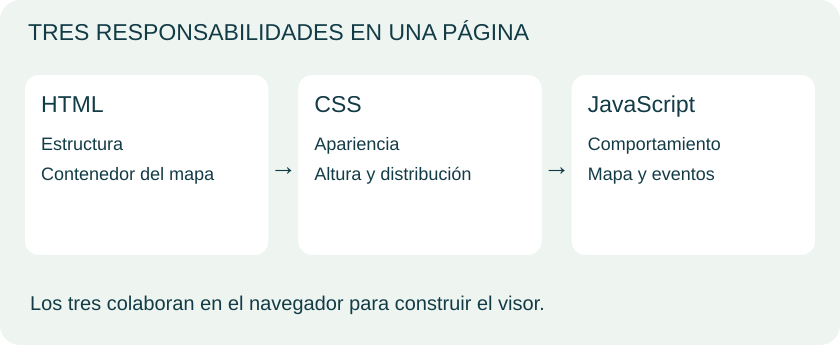
HTML aporta estructura: encabezados, párrafos, listas, enlaces e imágenes. CSS selecciona elementos y define su aspecto. JavaScript contiene funciones, instrucciones y eventos que cambian el comportamiento.
| Lenguaje | En el visor |
|---|---|
| HTML | Declarar el contenedor |
| CSS | Dar altura y ancho |
| JavaScript | Crear mapa y capas |
Un id identifica un elemento; una class agrupa estilos. CSS combina selector, propiedad y valor. La hoja CSS de la página y la simbología del servidor actúan en niveles distintos.
Referencia: MDN · estructura HTML.
2. Del documento a L.map
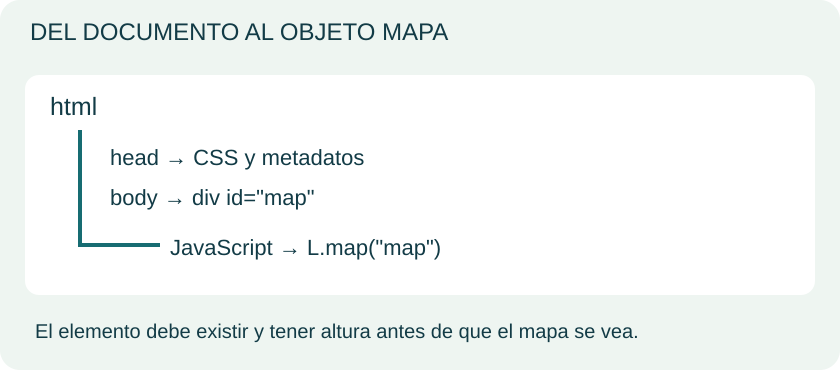
Leaflet necesita un elemento existente con tamaño visible. Si no tiene altura, un mapa bien inicializado puede no aparecer.
El curso carga leaflet.css y leaflet.js. L.map crea la instancia, setView establece centro y zoom y fitBounds ajusta la extensión.
La consola muestra errores y la pestaña de red permite revisar recursos. Sigue el primer error antes de cambiar varias partes. Sirve el visor mediante HTTP como indica la clase: abrir un archivo local no reproduce todos los comportamientos de un servidor.
Referencia: Leaflet · guía oficial.
3. Fondo, WMS y vectores
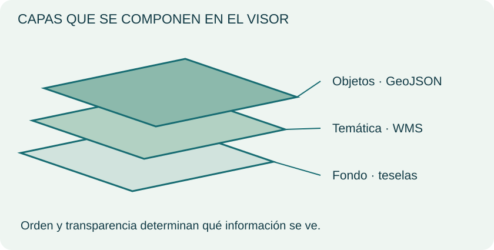
L.tileLayer carga teselas del fondo. L.tileLayer.wms solicita imágenes WMS. L.geoJSON crea capas vectoriales que pueden responder a acciones en el cliente.
| Contenido | Qué llega | Estilo |
|---|---|---|
| Teselas ráster | Imágenes | Ya aplicado |
| WMS | Imagen de mapa | Del servidor |
| GeoJSON | Geometrías y atributos | En el cliente |
Marcadores, líneas, polígonos y grupos organizan el mapa. addTo, addLayer y removeLayer controlan su presencia. Conserva la atribución de los proveedores: los fondos tienen condiciones de uso propias.
Referencia: Leaflet · guía oficial.
4. Eventos, popups y controles
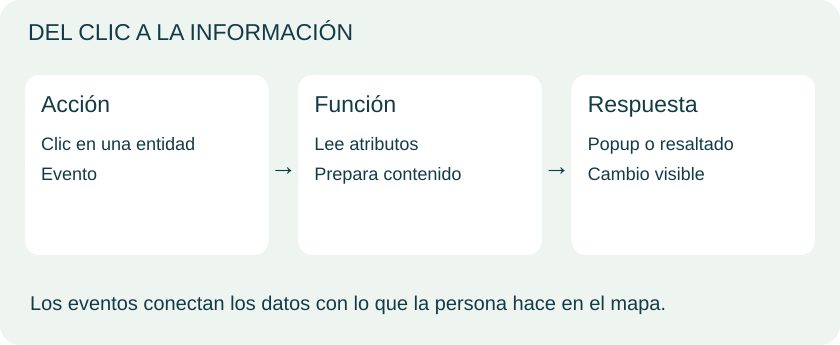
Un evento comunica algo ocurrido, como un clic. Una función puede leer atributos, abrir información o cambiar un estilo. Popups y tooltips aportan contexto.
Los controles permiten manejar zoom, escala y capas. El control de capas distingue fondos alternativos y superposiciones. Título y leyenda ayudan a interpretar los símbolos.
Una función de estilo puede representar atributos con colores o tamaños. onEachFeature facilita asociar acciones a cada entidad GeoJSON. Los plugins añaden funciones como búsqueda; comprueba la compatibilidad con la versión utilizada.
Referencia: Leaflet · guía oficial.
5. Coordenadas, radio y depuración
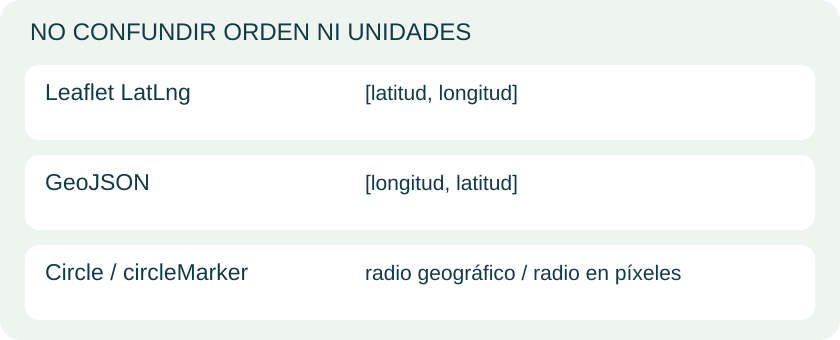
En llamadas habituales de Leaflet que reciben LatLng, el orden es latitud, longitud. En GeoJSON es longitud, latitud. Intercambiarlos puede situar los datos en otro lugar.
L.circle usa radio geográfico en metros; L.circleMarker, píxeles. Un símbolo de pantalla y una zona de influencia tienen significados distintos.
Si el mapa falla, revisa tamaño del contenedor, bibliotecas, ejecución, variables, coordenadas y respuestas de red. Se conservan dos prácticas diferenciadas: 9 ejercicios de HTML/CSS/JavaScript y 12 de Leaflet, con numeración propia.
Referencia: Leaflet · guía oficial · IETF · RFC 7946 (GeoJSON).
6. Preparar los archivos y abrir el entorno
Necesitas un editor de texto, navegador con herramientas de desarrollo, GeoServer iniciado y las capas earth:countries, earth:cities y earth:worldgroup. Conserva los archivos HTML, JavaScript, estilos e imágenes del paquete del curso. Primero se realizan las actividades de HTML/CSS/JavaScript y después las de Leaflet.
- Localiza el directorio de datos de tu GeoServer y su carpeta
www. Crea allí una carpeta para tus archivos de esta unidad. - Guarda los archivos con su extensión real
.html,.csso.js; comprueba que el editor no añade.txt. - Abre cada HTML desde
http://localhost:8080/geoserver/www/y su ruta relativa. Esto permite trabajar con los servicios locales desde el mismo origen. - Abre las herramientas de desarrollo del navegador. Mantén visibles Consola para errores y Red / Network para archivos o servicios que no cargan.
7. Del HTML al visor del curso
Editar estructura, estilo y comportamiento
- Abre el archivo indicado en el contexto de la primera actividad. Identifica
head,titleybody: el título de la pestaña y el contenido visible son elementos distintos. - Para las actividades de listas y párrafos, conserva una estructura HTML válida y aplica CSS al selector que corresponda. Un selector
#nombreapunta a unid;.nombreapunta a una clase. - Guarda, recarga y comprueba el cambio en Elementos / Inspector. Si no aparece, confirma que editas el mismo archivo que muestra la URL.
- Carga el JavaScript después de los elementos que necesita, o espera a que el documento esté listo. Lee primero el primer error de consola: puede impedir la ejecución del resto.
Preparar Leaflet
En el HTML de Leaflet del curso comprueba estos cuatro elementos antes de añadir capas: CSS de Leaflet en head, JavaScript de la misma versión, contenedor del mapa con un identificador y altura CSS, e inicialización después de que exista ese contenedor. Conserva la versión y los nombres de archivos usados en la práctica para evitar mezclar ejemplos.
// Dentro del script del visor, con Leaflet ya cargado y un div id="map".
const map = L.map('map').setView([40.4, -3.7], 5);
const paises = L.tileLayer.wms('/geoserver/earth/wms', {
layers: 'earth:countries',
format: 'image/png',
transparent: true
}).addTo(map);
Este fragmento explica cómo conectar la capa original; no es un HTML completo ni sustituye los archivos de partida de la práctica. Si el visor ya declara map, reutilízalo en lugar de crear otro. setView recibe latitud, longitud; las coordenadas internas de GeoJSON se escriben longitud, latitud.
Incorporar WMS y GeoJSON
- Prueba primero
earth:countriesen la previsualización de GeoServer. Después usa el mismo nombre enlayersde la capa WMS de Leaflet. - Repite el patrón para las otras capas que pida la actividad y revisa su orden, transparencia y nombre con prefijo.
- Para GeoJSON guarda el archivo exportado desde QGIS dentro del directorio web del proyecto. Conserva EPSG:4326 para el intercambio GeoJSON y revisa sus atributos.
- Carga el archivo por HTTP y entrégalo a
L.geoJSON. Configurastylepara líneas y polígonos; para puntos utiliza las opciones adecuadas, comopointToLayer, cuando corresponda. - Añade las capas al control de capas usando las mismas variables de las capas creadas. Crear un control no agrega automáticamente una capa al mapa.
Eventos, ventanas y depuración
Asocia eventos con .on(...) al mapa o a la capa indicada. Para leer atributos de un GeoJSON utiliza feature.properties y revisa primero sus nombres reales. Un popup no genera información que no exista en esos atributos. Para radios distingue L.circle, que utiliza metros, de L.circleMarker, cuyo radio se expresa en píxeles.
| Qué falla | Qué revisar |
|---|---|
L is not defined |
Archivo Leaflet cargado antes de tu script y respuesta HTTP correcta |
| Mapa invisible | Altura del contenedor, identificador y momento de inicialización |
| Map container is already initialized | Inicialización duplicada del mismo contenedor |
| WMS en blanco | Nombre publicado, extensión, servidor activo y respuesta en Red |
| Error al leer GeoJSON | Ruta, respuesta HTTP y JSON válido; no abrir como file:// |
| CORS o contenido mixto | Origen de página y servicios; HTTP/HTTPS y configuración del servidor |
Las credenciales de ejemplo de Mapbox fueron omitidas de la copia publicada. Si una actividad depende de ese proveedor, necesitas tu propio acceso y configuración: la guía no proporciona un token. Mantén esa dependencia explícita al documentar tu práctica.
Fuentes: prácticas originales de HTML/CSS/JavaScript y Leaflet de MappingGIS · Leaflet · preparación del mapa · referencia de clases y opciones.
Material y referencias
Ampliación técnica: Guía de Leaflet · HTML en MDN. Las versiones e interfaces del PDF corresponden al entorno de las clases; los diagramas muestran conceptos.
Antes de resolver las actividades
Completa la preparación y los procedimientos anteriores. Después avanza por los ejercicios en su orden original: varias actividades utilizan archivos, capas o cambios de las anteriores. Cada actividad conserva su enunciado y sus paneles de instrucciones y capturas dentro de la página; el PDF queda como respaldo.
Si una consigna menciona «el código anterior» o «la imagen anterior», abre su panel de contexto antes de trabajar. Comprueba qué archivo o recurso debes modificar, guarda el cambio y verifica el resultado antes de tomar la captura. No ejecutes de nuevo una creación o importación si ya existe el objeto correspondiente.
Ejercicio Unidad 5
Enunciados y contexto de los PDF de MappingGIS. No se añaden actividades ni soluciones. Los paneles incluyen los pasos originales dentro de la unidad; el PDF conserva la maquetación completa.
HTML/CSS/JS: PDF original completo.
HTML/CSS/JS · Ejercicio 1 · Editar título y cuerpo
Modifica tanto el título de la página como el texto del cuerpo y realiza una captura de pantalla con el resultado.
Pasos y contexto originales de la clase
Página 3
Unidad 5. HTML5, CSS, JavaScript y depuración de errores
3
Programa, sentencias y comentarios ............................................................................. 25
Variables ................................................................................................................................ 25
Sintaxis ...................................................................................................................................... 27
Delimitación de sentencias ............................................................................................... 27
Nombre de variables .......................................................................................................... 27
Orden en la creación de variables ................................................................................... 27
Declaraciones y expresiones ............................................................................................ 29
Funciones útiles ....................................................................................................................... 29
Script con fecha ................................................................................................................... 29
Script con expresión ........................................................................................................... 30
Funciones .................................................................................................................................. 30
Condicionales y bucles ........................................................................................................... 31
Depuración de JavaScript ...................................................................................................... 34
Corrección de errores con Firefox ................................................................................... 34
Depuración de errores con Chrome ............................................................................... 40
Página 4
Unidad 5. HTML5, CSS, JavaScript y depuración de errores
4
HTML
Es un lenguaje de marcas para formatear y estructurar un documento, que puede
leerse en cualquier navegador.
<html> … …</html>
Estructura de un HTML
Un documento HTML tiene tres etiquetas que describen la estructura general de
un documento y dan una información sencilla sobre él:
<html>
<head> y
<body>
Dentro de un HTML debemos escribir siempre
<!doctype html>
en la primera línea. Esto le dice al navegador cuál es el lenguaje que está leyendo
(en este caso, HTML5).
Doctype comienza a utilizarse en HTML4.01 y XHTML https://validator.w3.org/
La cabecera <head>
El contenido que irá dentro de nuestro archivo HTML irá en medio de las
etiquetas de inicio <html> y de cierre </html>.
El archivo siempre consiste de dos partes: la cabecera y el cuerpo. Vamos a
centrarnos en la cabecera.
Tiene una etiqueta de inicio y una de cierre.
La cabecera incluye información importante, como el título de la página web. El
título <TITLE> es el nombre que aparece en la cabecera del visualizador y en los
buscadores, de ahí la importancia de que sea significativo.
Página 5
Unidad 5. HTML5, CSS, JavaScript y depuración de errores
5
La etiqueta meta define varios tipos de metadatos.
El atributo charset especifica la codificación usada en nuestra página.
<meta charset="character_set">
Charset utf-8 es la Unicode Transformation Format 8-bit representa el código
de caracteres UNICODE. Es compatible con ASCII.
Permite visualizar los caracteres de todos los idiomas.
Hay otras etiquetas como description o keywords. Estas etiquetas meta se
utilizan para dar información sobre el contenido de la página web pero
normalmente no son mostradas en pantalla. Es información relevante para el
navegador porque permite realizar las búsquedas y conocer los datos más
relevantes de la página pero como hemos dicho no son visibles para el usuario.
Un elemento importante a incluir en la cabecera del documento es <link>.
Esta etiqueta es la que se utiliza para incorporar a nuestra página otros archivos
externos con imágenes, iconos, código,… Con <link> necesitaremos utilizar dos
atributos: rel y href.
A continuación se muestra un ejemplo típico de una cabecera:
<!DOCTYPE html>
<html>
<head>
<meta charset="UTF-8">
<meta name="description" content="Mi primer HTML">
<meta name="keywords" content="HTML , MappinGIS, Leaflet">
<link rel="stylesheet" type="text/css" href="mihojadeestilos.css">
<title> MappingGIS.com </title>
</head>
</html>
El atributo rel indica la relación entre el documento y el archivo que estamos
cargando. En este ejemplo el atributo rel tiene el valor stylesheet (hoja de estilos)
que está indicando que el archivo que incorporamos (“mihojadeestilos.css”) es
un archivo CSS. Durante este curso veremos algún ejemplo de archivo css y
como traba jar con él. El atributo href indica la ruta donde se encuentra el
archivo que vamos a utilizar.
Página 6
Unidad 5. HTML5, CSS, JavaScript y depuración de errores
6
El cuerpo <body>
El contenido en el cuerpo es lo que será visible en la página web. Contiene los
elementos visibles en la página web: párrafos, imágenes, encabezados, listas,
etc.
<!DOCTYPE html>
<html>
<head>
<title>MappingGIS.com</title>
</head>
<body>Formación que impulsa tu perfil GIS</body>
</html>
Edita el archivo web.html que creamos en la unidad 1 y que hemos guardado en el
directorio \data_dir\www
Si haces doble clic sobre él, se abrirá como una página web en tu navegador, pero
si lo abres con un editor de texto, como Notepad++ o Sublime Text nos aparecerá
su código fuente.
Antes de continuar instala uno de los editores anteriores.
La instalación de Notepad++ es muy sencilla. Accede a la página de descargas y haz
clic sobre Download. Ejecuta el archivo .exe que se descarga y sigue los pasos.
Una vez que se haya instalado h az clic con el botón derecho del ratón y clic sobre
Edit with Notepadd++.
Copia el texto anterior y pégalo en el editor:
Página 7
Unidad 5. HTML5, CSS, JavaScript y depuración de errores
7
Explicación del ejemplo
<!doctype html> especifica que el lenguaje es HTML5.
<html> Indica al navegador que abre un archivo HTML.
<head> Apertura de la cabecera del documento. Sección que no se muestra en la
pantalla.
<title> MappingGIS.com </title> Título de la página.
</head> Cierre de la cabecera del documento.
<body> Apertura del cuerpo del documento. Esta sección aparece en la pantalla.
Formación GIS y difusión tecnológica . Texto que va a ser mostrado por el
navegador.
</body> Cierre del cuerpo del documento.
</html> Cierre del archivo HTML
Fíjate que al situar el cursor sobre la etiqueta <head> también se ilumina la etiqueta
de cierre </head>
Abre la web en tu navegador, ve a: http://localhost:8080/geoserver/www/web.html
Página 8
Unidad 5. HTML5, CSS, JavaScript y depuración de errores
8
En la pestaña verás el título de la página web y en contenido una breve descripción:
Si al abrir el navegador te aparecen caracteres extraños en el texto y no reconoce
las tildes, ñ, etc hay un problema con la codificación del archivo. Con un editor de
texto, como Notepad++ o Sublime Text, puedes modificar su codificación a UTF-8:
Ejercicio nº1 Modifica tanto el título de la página como el texto del cuerpo y
realiza una captura de pantalla con el resultado.
Video: Visualiza el video correspondiente a esta sección
Ver página 8 del PDF original, con sus capturas
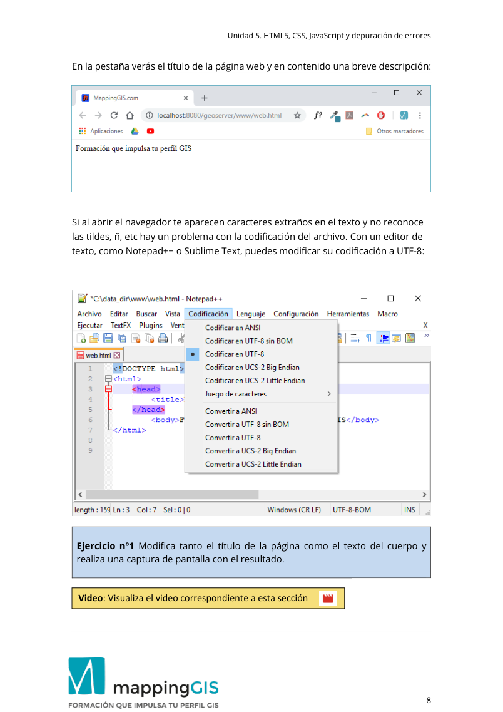
Consultar en el PDF · página 8
HTML/CSS/JS · Ejercicio 2 · Lista de favoritos
Escribe un código HTML para crear una lista con tus libros, películas de cine,... preferidas. Haz que el marcador del item de la lista sea un cuadrado y que el primer elemento de la lista esté en negrita. Elige además un color para el fondo del cuerpo del documento.
Pasos y contexto originales de la clase
Página 8
Unidad 5. HTML5, CSS, JavaScript y depuración de errores
8
En la pestaña verás el título de la página web y en contenido una breve descripción:
Si al abrir el navegador te aparecen caracteres extraños en el texto y no reconoce
las tildes, ñ, etc hay un problema con la codificación del archivo. Con un editor de
texto, como Notepad++ o Sublime Text, puedes modificar su codificación a UTF-8:
Ejercicio nº1 Modifica tanto el título de la página como el texto del cuerpo y
realiza una captura de pantalla con el resultado.
Video: Visualiza el video correspondiente a esta sección
Página 9
Unidad 5. HTML5, CSS, JavaScript y depuración de errores
9
Etiquetas de HTML
1. Lo que va dentro de los signos “<” y “>” se denominan etiquetas.
2. Las etiquetas casi siempre vienen en pares: una etiqueta de inicio y una
etiqueta de cierre.
3. Un ejemplo de una etiqueta de inicio: <html>
4. Un ejemplo de una etiqueta de cierre: </html>
5. El texto que se encuentra entre dos etiquetas es el contenido del
elemento.
Imagina que las etiquetas son como paréntesis; cuando abres uno, debes
cerrarlo. Las etiquetas también pueden anidarse, así que debes cerrarlas en el
orden correcto: la etiqueta abierta más recientemente debe ser la primera que
se cierre, como en el ejemplo de abajo.
<primera etiqueta>
<segunda etiqueta>¡Algún texto!</segunda etiqueta>
</primera etiqueta>
En el ejemplo:
<b>Este texto es en negrita.</b>
El elemento HTML comienza con la etiqueta de apertura <b> (etiqueta que nos
muestra el texto en negrita).
El contenido de dicho elemento es: Este texto es en negrita.
El fin del elemento HTML es con la etiqueta de cierre </b>.
Párrafos y encabezados
Cada párrafo requiere etiquetas de inicio y de cierre: <p> y </p>. Colocamos el
contenido en medio de las etiquetas.
El siguiente paso es colocarle encabezados a nuestros párrafos, usando
las etiquetas de encabezado.
HTML nos permite tener más de un tamaño de encabezado. Hay seis tamaños
de encabezado: <h1> es el más importante y <h6> el menos importante.
Página 10
Unidad 5. HTML5, CSS, JavaScript y depuración de errores
10
Etiquetas para crear listas
Para crear una lista en HTML utilizaremos el elemento <ul> en combinación con
<li>, como en el ejemplo siguiente:
<!DOCTYPE html>
<html>
<head>
<meta charset="UTF-8">
<meta name="description" content="Mi segundo HTML">
<meta name="keywords" content="HTML , MappinGIS, Leaflet">
<title> Mis bebidas preferidas </title>
</head>
<body>
<h2>Lista de capas base</h2>
<ul>
<li>Stamen</li>
<li>OpenStreetMap</li>
<li>Google Maps</li>
</ul>
</body>
</html>
La etiqueta <ul> del ejemplo anterior crea una lista de elementos sin un orden
definido, (se mostrarán en el mismo orden que han sido escritos).
Para declarar cada elemento utilizaremos <li>.
Se ha añadido además una etiqueta de encabezado <h2> que mostrará el texto
“Lista de capas base” al ejecutar la página en el navegador.
Atributos de las etiquetas
Muchas etiquetas llevan atributos. Los atributos proveen de mayor información
a los elementos HTML.
Los atributos siempre van con la estructura: nombre="valor".
Los atributos siempre van en la etiqueta de apertura.
Los valores siempre hay que ponerlos entre comillas.
Un ejemplo de los atributos sería:
<body bgcolor="#FFFF00">
Hola a todos. <b>Este texto es en negrita</b>
</body>
Resultado
Página 11
Unidad 5. HTML5, CSS, JavaScript y depuración de errores
11
Hola a todos. Este texto es en negrita
En la etiqueta <body> podemos observar el atributo bgcolor= (color de fondo) y
el valor "#FFFF00"(representa el color amarillo en hexadecimal).
Esto quiere decir que el color de fondo de la página será amarillo.
Nota: La etiqueta <b> y su correspondiente par de cierre </b> indican que el
texto incluido entre ambas se mostrará en negrita.
Otro ejemplo del uso de atributos los podemos aplicar al caso de las listas
que explicamos en el ejemplo anterior.
<ul style="list-style-type:square">
Mediante el atributo style podemos indicar el aspecto que tendrá el
marcador de cada item de la lista, por ejemplo en este caso le estamos
indicando que sea un cuadrado.
Ejercicio nº2 Escribe un código HTML para crear una lista con tus libros,
películas de cine,... preferidas. Haz que el marcador del item de la lista sea un
cuadrado y que el primer elemento de la lista esté en negrita. Elige además un
color para el fondo del cuerpo del documento.
Haz una captura de pantalla con el resultado y pégalo en la hoja de resultados
Imágenes
Para añadir imágenes a un sitio web solamente necesitas una etiqueta de
imagen: <img>. Esta etiqueta es un poco diferente a las demás. En vez de colocar
el contenido en medio de las etiquetas, le dices a la etiquetas dónde está la
imagen, usando src.
La dirección web (o URL, por localizador de recursos uniforme) después de src=
le dice a la etiqueta <img> de dónde obtener la imagen.
<!DOCTYPE html>
<html>
<head>
<title> Curso online desarrollo de aplicaciones web
mapping</title>
</head>
<body>
Ver página 11 del PDF original, con sus capturas
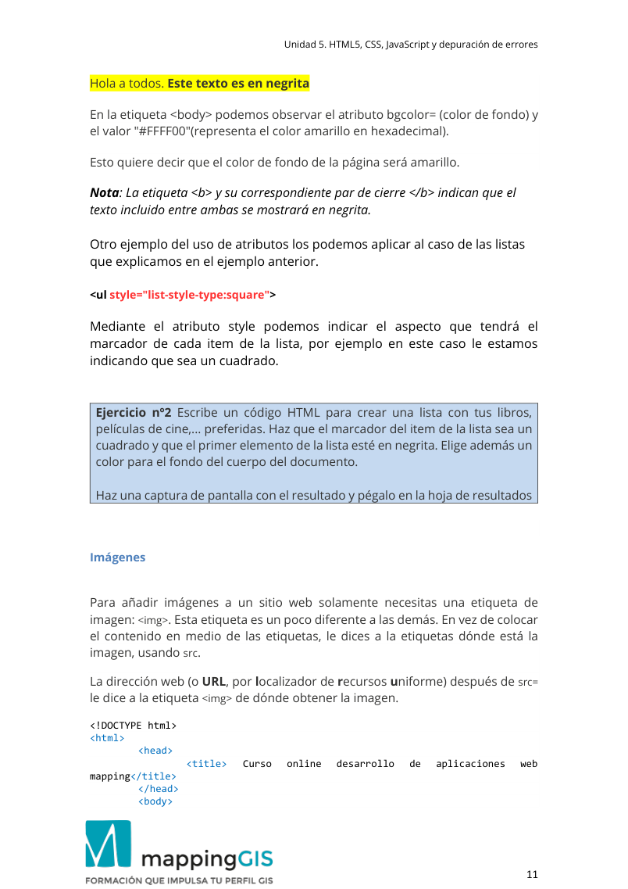
Consultar en el PDF · página 11
HTML/CSS/JS · Ejercicio 3 · Comentarios HTML
Sustituye el párrafo Insertando una imagen por el mismo texto como un comentario.
Pasos y contexto originales de la clase
Página 11
Unidad 5. HTML5, CSS, JavaScript y depuración de errores
11
Hola a todos. Este texto es en negrita
En la etiqueta <body> podemos observar el atributo bgcolor= (color de fondo) y
el valor "#FFFF00"(representa el color amarillo en hexadecimal).
Esto quiere decir que el color de fondo de la página será amarillo.
Nota: La etiqueta <b> y su correspondiente par de cierre </b> indican que el
texto incluido entre ambas se mostrará en negrita.
Otro ejemplo del uso de atributos los podemos aplicar al caso de las listas
que explicamos en el ejemplo anterior.
<ul style="list-style-type:square">
Mediante el atributo style podemos indicar el aspecto que tendrá el
marcador de cada item de la lista, por ejemplo en este caso le estamos
indicando que sea un cuadrado.
Ejercicio nº2 Escribe un código HTML para crear una lista con tus libros,
películas de cine,... preferidas. Haz que el marcador del item de la lista sea un
cuadrado y que el primer elemento de la lista esté en negrita. Elige además un
color para el fondo del cuerpo del documento.
Haz una captura de pantalla con el resultado y pégalo en la hoja de resultados
Imágenes
Para añadir imágenes a un sitio web solamente necesitas una etiqueta de
imagen: <img>. Esta etiqueta es un poco diferente a las demás. En vez de colocar
el contenido en medio de las etiquetas, le dices a la etiquetas dónde está la
imagen, usando src.
La dirección web (o URL, por localizador de recursos uniforme) después de src=
le dice a la etiqueta <img> de dónde obtener la imagen.
<!DOCTYPE html>
<html>
<head>
<title> Curso online desarrollo de aplicaciones web
mapping</title>
</head>
<body>
Página 12
Unidad 5. HTML5, CSS, JavaScript y depuración de errores
12
<p>Insertando una imagen</p>
<img src="https://mappinggis.com/wp-
content/uploads/2014/02/resultado.png">
</body>
</html>
La indentación
La indentación es el espaciado que hay desde el margen en cada línea. Podrás
ver que cuando ponemos etiquetas dentro de otras etiquetas, las indentamos
aún más.
JavaScript no es un lenguaje indentado (es recomendable pero no necesario),
La indentación hace que tu código se pueda leer mejor.
Trata de seguir este estilo de indentación cuando estés escribiendo HTML, para
que no te confundas:
<!DOCTYPE html>
<html>
<head>
<title></title>
</head>
<body>
</body>
</html>
Comentarios
Puedes incluir pequeñas notas, que el navegador no mostrará, en tu código
HTML. Los comentarios son muy útiles en nuestro código para ayudar nos a
recordar porqué hicimos ciertas cosas.
Los comentarios en HTML comienzan con <!-- y terminan con -->, así:
<!-- ¡Este es un ejemplo de un comentario en HTML! -->
Ejercicio nº3. Sustituye el párrafo Insertando una imagen por el mismo texto
como un comentario.
Haz una captura de pantalla del código utilizado.
Ver página 12 del PDF original, con sus capturas
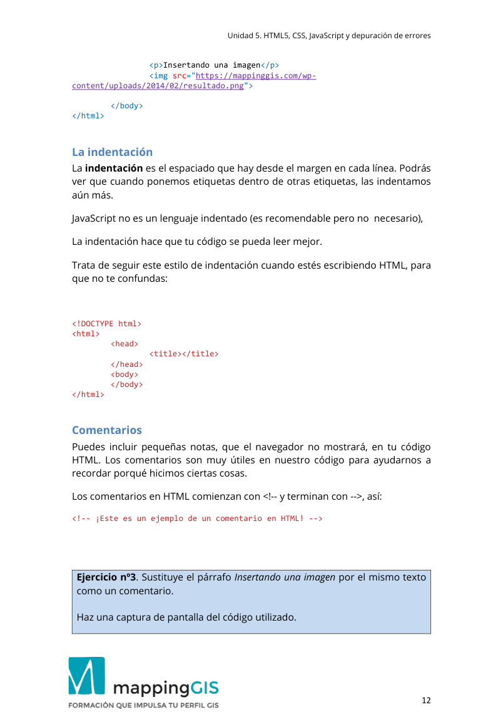
Consultar en el PDF · página 12
HTML/CSS/JS · Ejercicio 4 · Estilo del párrafo
Añade un párrafo que lleve como nombre Mapa de Leaflet pero de color azul, tamaño 18 y el tipo de fuente Tahoma.
Pasos y contexto originales de la clase
Página 12
Unidad 5. HTML5, CSS, JavaScript y depuración de errores
12
<p>Insertando una imagen</p>
<img src="https://mappinggis.com/wp-
content/uploads/2014/02/resultado.png">
</body>
</html>
La indentación
La indentación es el espaciado que hay desde el margen en cada línea. Podrás
ver que cuando ponemos etiquetas dentro de otras etiquetas, las indentamos
aún más.
JavaScript no es un lenguaje indentado (es recomendable pero no necesario),
La indentación hace que tu código se pueda leer mejor.
Trata de seguir este estilo de indentación cuando estés escribiendo HTML, para
que no te confundas:
<!DOCTYPE html>
<html>
<head>
<title></title>
</head>
<body>
</body>
</html>
Comentarios
Puedes incluir pequeñas notas, que el navegador no mostrará, en tu código
HTML. Los comentarios son muy útiles en nuestro código para ayudar nos a
recordar porqué hicimos ciertas cosas.
Los comentarios en HTML comienzan con <!-- y terminan con -->, así:
<!-- ¡Este es un ejemplo de un comentario en HTML! -->
Ejercicio nº3. Sustituye el párrafo Insertando una imagen por el mismo texto
como un comentario.
Haz una captura de pantalla del código utilizado.
Página 13
Unidad 5. HTML5, CSS, JavaScript y depuración de errores
13
Estilos
Tamaño de fuente
Como recordarás, HTML es el esqueleto de la página web, y CSS te permite darle
al esqueleto algo de piel y de maquillaje.
Pero es posible hacer algo de CSS en líneas. Esto simplemente quiere decir que
podemos poner algo de estilo en nuestro HTML sin preocuparnos por un archivo
CSS aparte.
Recuerda que <p> y </p> son etiquetas de inicio y de cierre.
Le podemos dar a las etiquetas más instrucciones mediante la inclusión de
atributos en la etiqueta de inicio. Un atributo es solamente una característica o
una descripción del contenido en el elemento.
Vamos a cambiar el tamaño del texto usando el atributo style. Escribimos igual
a font -size, seguido de dos puntos, el tamaño que deseamos, y finalizamos
con px (abreviatura de "pixeles"). Por ejemplo:
<p style = "font-size: 12px"></p>
Color de fuente
Para cambiar el color del texto, simplemente añade el atributo style en la
etiqueta de inicio, luego haz que sea igual a "color:blue" (color azul) o cualquier
otro color. Por ejemplo:
<p style="color:red"></p>
Si quieres cambiar el color y el tamaño del texto basta con añadir un punto y
coma en medio de cada parte. Por ejemplo:
<p style="color: red; font-size:8px"></p>
Familia de fuentes tipográficas
Para cambiar el tipo de fuente, añade el atributo style en la etiqueta de inicio,
luego hazlo igual a "font-family:Helvetica" (o cualquier fuente que quieras). Por
ejemplo:
<p style="font-family:Futura"></p>
Ejercicio nº 4. Añade un párrafo que lleve como nombre Mapa de Leaflet pero
de color azul, tamaño 18 y el tipo de fuente Tahoma.
Haz una captura de pantalla y pégala en la hoja de resultados.
Ver página 13 del PDF original, con sus capturas
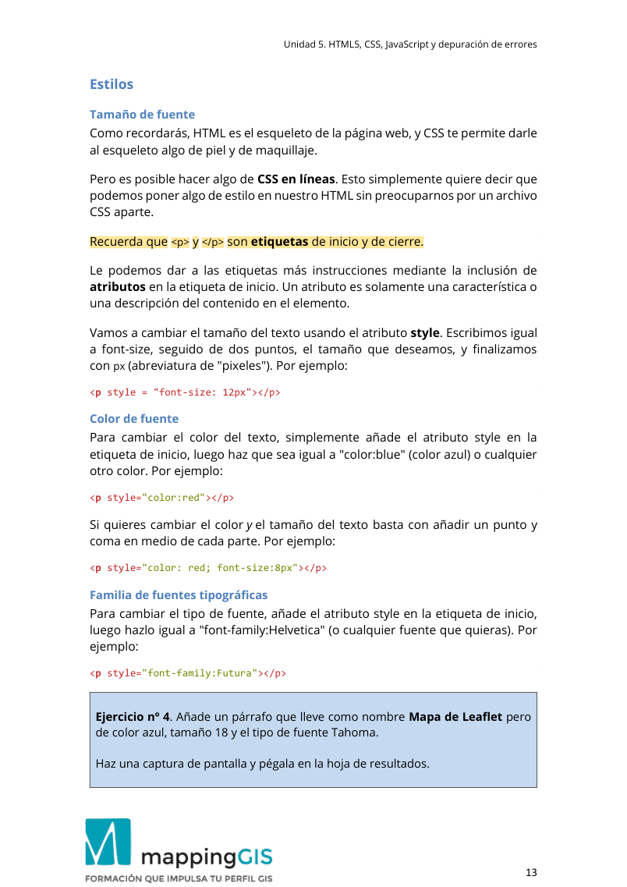
Consultar en el PDF · página 13
HTML/CSS/JS · Ejercicio 5 · Propiedades CSS
Incluye las propiedades y valores dentro de las etiquetas de estilo CSS y sube el html a la plataforma de formación.
Pasos y contexto originales de la clase
Página 13
Unidad 5. HTML5, CSS, JavaScript y depuración de errores
13
Estilos
Tamaño de fuente
Como recordarás, HTML es el esqueleto de la página web, y CSS te permite darle
al esqueleto algo de piel y de maquillaje.
Pero es posible hacer algo de CSS en líneas. Esto simplemente quiere decir que
podemos poner algo de estilo en nuestro HTML sin preocuparnos por un archivo
CSS aparte.
Recuerda que <p> y </p> son etiquetas de inicio y de cierre.
Le podemos dar a las etiquetas más instrucciones mediante la inclusión de
atributos en la etiqueta de inicio. Un atributo es solamente una característica o
una descripción del contenido en el elemento.
Vamos a cambiar el tamaño del texto usando el atributo style. Escribimos igual
a font -size, seguido de dos puntos, el tamaño que deseamos, y finalizamos
con px (abreviatura de "pixeles"). Por ejemplo:
<p style = "font-size: 12px"></p>
Color de fuente
Para cambiar el color del texto, simplemente añade el atributo style en la
etiqueta de inicio, luego haz que sea igual a "color:blue" (color azul) o cualquier
otro color. Por ejemplo:
<p style="color:red"></p>
Si quieres cambiar el color y el tamaño del texto basta con añadir un punto y
coma en medio de cada parte. Por ejemplo:
<p style="color: red; font-size:8px"></p>
Familia de fuentes tipográficas
Para cambiar el tipo de fuente, añade el atributo style en la etiqueta de inicio,
luego hazlo igual a "font-family:Helvetica" (o cualquier fuente que quieras). Por
ejemplo:
<p style="font-family:Futura"></p>
Ejercicio nº 4. Añade un párrafo que lleve como nombre Mapa de Leaflet pero
de color azul, tamaño 18 y el tipo de fuente Tahoma.
Haz una captura de pantalla y pégala en la hoja de resultados.
Página 14
Unidad 5. HTML5, CSS, JavaScript y depuración de errores
14
Color de fondo
De nuevo vamos a usar el atributo style. Lo haremos igual a "background-color:
red" (color de fondo: rojo) o cualquier color que quieras. ¡Es así de fácil!
<body style="background-color: blue">
Página 15
Unidad 5. HTML5, CSS, JavaScript y depuración de errores
15
Etiqueta iframe
Es posible incrustar mapas web en la p ágina haciendo uso de la etiqueta
<iframe>.
La etiqueta <iframe> sirve para crear un espacio dentro de la página donde se
puede incrustar otra web.
Es un cuadrado cuyas dimensiones debe especificar el desarrollador en la propia
etiqueta iframe, que tiene asociada una página web que se carga en dicho
espacio. Esa página web tendrá sus propios contenidos y estilos, independientes
del contexto donde se está mo strando. Además será perfectamente funcional:
si tiene enlaces se mostrarán en ese mismo espacio y si tiene scripts o
aplicaciones dentro se ejecutarán también de manera autónoma en el espacio
reservado al iframe.
<iframe style="border: none;" height="400" width="600"
src="http://localhost:8080/geoserver/www/web.html"></iframe>
Página 16
Unidad 5. HTML5, CSS, JavaScript y depuración de errores
16
CSS
CSS (cuyas siglas significan Cascading StyleSheets, u Hojas de Estilo en Cascada)
es un lenguaje usado para describir la apariencia y el formato de tu HTML.
Una hoja de estilo es un archivo que describe como debería verse un archivo
HTML.
Decimos que estas hojas de estilo están en cascada porque las hojas pueden
aplicar el formato cuando corresponde más de un estilo. Por ejemplo, si indicas
que todos los párrafos debe n tener una fuente de color azul, pero señalas que
un párrafo específico debe tener fuente de color rojo, CSS lo puede hacer.
El archivo stylesheet.css contiene toda la información de estilo de CSS: en dónde
deberían ir los elementos de HTML, cuál color de berían tener, qué tamaño
deberían tener, y más.
Existen dos razones principales para separar tu forma/formato (CSS) de tu
contenido/estructura funcional (HTML):
a. Puedes aplicarle el mismo formato a diversos elementos de HTML sin
reescribir el código (p.ej., style="color:red":) una y otra vez.
b. Puedes aplicarle una apariencia y un formato similares a varias páginas
de HTML desde un solo archivo CSS.
Incluir CSS en HTML
Para que tu archivo HTML pueda ver la información de CSS puedes colocar una
etiqueta <link> entre las etiquetas <head></head> de tu página HTML. Tu etiqueta
<link> necesitará tres atributos:
1. Un atributo type que será igual a "text/css"
2. Un atributo rel que será igual a "stylesheet"
3. Un atributo href que debe apuntar a la dirección web de tu archivo CSS
Página 17
Unidad 5. HTML5, CSS, JavaScript y depuración de errores
17
<!DOCTYPE html>
<html>
<head>
<link type="text/css" rel="stylesheet"
href="stylesheet.css"/>
<title>Título</title>
</head>
<body>
<p>párrafo</p>
</body>
</html>
Como nada va en medio de las etiquetas<link></link>, está bien usar un solo par
de <> para que sirvan como etiquetas de inicio y de cierre.
La sintaxis de CSS
La sintaxis de CSS es distinta de la de HTML. El formato general se ve así:
selector {
propiedad: valor;
}
Un selector puede ser cualquier elemento de HTML, como <p>, <img>, o <table>.
Simplemente es necesario obviar los <>. Para hacer que el texto de un párrafo
tenga color rojo con CSS, escribirías:
p {
color: red;
}
Una propiedad es un aspecto de un selector. Por ejemplo, puedes cambiar font-
family, color, y font-size del texto en tus páginas web (además de muchos más).
Un valor es una posible configuración de una propiedad. color puede ser rojo ,
azul, negro o cualquier otro color; font-family puede ser prácticamente cualquier
fuente; y así sucesivamente.
Debes finalizar cada propiedad-valor con un punto y coma ( ;). Así es como CSS
sabe que ya terminaste de trabajar en un par y que estás listo para trabajar en
el siguiente.
Página 18
Unidad 5. HTML5, CSS, JavaScript y depuración de errores
18
Además un selector puede tener muchas propiedades. Por ejemplo, si quieres
establecer la fuente, el color de fuente y el tamaño de fuente de un párrafo,
sencillamente puedes escribir:
p {
font-family: Arial;
color: blue;
font-size: 24px;
}
Ahora vamos a incluir código CSS dentro de nuestro HTML. Deberás incluir las
etiquetas <style> y </style> dentro de la etiqueta <head>.
<!DOCTYPE html>
<html>
<head>
<style>
<!-- aquí dentro va nuestro código CSS -->
</style>
</head>
<body> </body>
</html>
Dentro de las etiquetas de estilo incluiremos nuestr as propiedades y valores
para el párrafo Mapa de Leaflet.
Elimina las definiciones de estilo que incluimos en el ejercicio anterior . La línea
debería quedar así:
<p> Mapa de Leaflet</p>
Ahora incluye este código dentro de las etiquetas style:
p {
font-family: Arial;
color: red;
font-size: 18px;
}
Ejercicio nº5. Incluye las propiedades y valores dentro de las etiquetas de estilo
CSS y sube el html a la plataforma de formación.
Ver página 18 del PDF original, con sus capturas
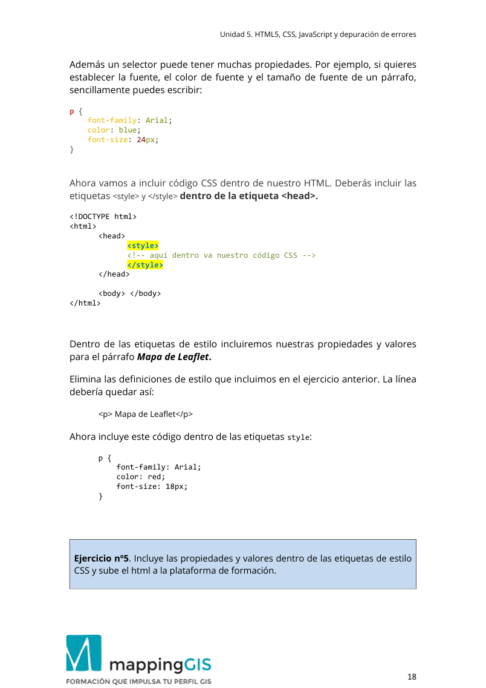
Consultar en el PDF · página 18
HTML/CSS/JS · Ejercicio 6 · Encabezado y párrafos
Utilizando como modelo el código d el ejemplo anterior escribe un texto con un encabezado y varios párrafos en los que se destaquen algunas de sus partes.
Pasos y contexto originales de la clase
Página 18
Unidad 5. HTML5, CSS, JavaScript y depuración de errores
18
Además un selector puede tener muchas propiedades. Por ejemplo, si quieres
establecer la fuente, el color de fuente y el tamaño de fuente de un párrafo,
sencillamente puedes escribir:
p {
font-family: Arial;
color: blue;
font-size: 24px;
}
Ahora vamos a incluir código CSS dentro de nuestro HTML. Deberás incluir las
etiquetas <style> y </style> dentro de la etiqueta <head>.
<!DOCTYPE html>
<html>
<head>
<style>
<!-- aquí dentro va nuestro código CSS -->
</style>
</head>
<body> </body>
</html>
Dentro de las etiquetas de estilo incluiremos nuestr as propiedades y valores
para el párrafo Mapa de Leaflet.
Elimina las definiciones de estilo que incluimos en el ejercicio anterior . La línea
debería quedar así:
<p> Mapa de Leaflet</p>
Ahora incluye este código dentro de las etiquetas style:
p {
font-family: Arial;
color: red;
font-size: 18px;
}
Ejercicio nº5. Incluye las propiedades y valores dentro de las etiquetas de estilo
CSS y sube el html a la plataforma de formación.
Página 19
Unidad 5. HTML5, CSS, JavaScript y depuración de errores
19
Por supuesto podemos utilizar las propiedades de estilo para d ar formato a
nuestro mapa. En los ejercicios de OpenLayers y Leaflet veremos cómo hacerlo.
<style>
#map {
Width: 50 px
height: 580px;
}
</style>
Comentarios
Como hemos visto, los comentarios de HTML se ven así:
<!--¡Soy un comentario!-->
Por otro lado, los comentarios de CSS lucen así:
/*¡Soy un comentario!*/
Volvemos a insistir: e scribir bueno s comentarios es un buen hábito para
recordar porqué hicimos algunas cosas.
Todos los elementos de HTML son posibles selectores
Podemos usar todos de elementos de nuestro HTML como selectores de CSS: le
podemos dar estilo a las etiquetas de HTML <h1></h1> con el selector de CSS h1,
a <p></p> con p, y así sucesivamente.
Además existen dos selectores importantes que puedes usar, los elementos de
HTML: de clase y de identificadores.
Video: Visualiza el video correspondiente a esta sección
Página 20
Unidad 5. HTML5, CSS, JavaScript y depuración de errores
20
Las clases
Las clases son útiles cuando tienes un montón de elementos que deberían tener
el mismo estilo. En vez de aplicar las mismas reglas a varios selectores,
simplemente puedes aplicar la misma clase a todos esos elementos de HTML y
luego definir el estilo para esa clase en la pestaña de CSS.
Las clases son asignadas a los elementos de HTML usando la palabra class y un
signo de igual, así:
<div class="cuadrado"></div>
<img class="cuadrado"/>
<td class="cuadrado"></td>
En CSS, las clases se identifican con un punto (.), así:
.cuadrado {
height: 100px;
width: 100px;
}
Esto te permite tomar elementos de diferentes tipos y darles el mismo estilo.
Entenderemos mejor como se utiliza con un ejemplo.
<!DOCTYPE html>
<html>
<head>
<meta charset="UTF-8">
<title> Practicando con clases </title>
<style>
span.nota {
font-size: 120%;
color: red;
}
</style>
</head>
<body>
<h1>Es importante proteger <span class="nota">el medio ambiente</span> de
nuestro planeta</h1>
<p>También es importante conservar la <span class="nota">biodiversidad</span>
de la tierra y sus océanos, para lo cual es imprescindible reducir la emisión
a la atmósfera de <span class="nota"> gases de efecto invernadero</span>
responsables del calentamiento global. </p>
</body>
</html>
En el código anterior cada vez que el navegador se encuentre con la definición de
clase aplicará el estilo CSS que hemos creado. Estamos utilizando también una
Página 21
Unidad 5. HTML5, CSS, JavaScript y depuración de errores
21
etiqueta <span> que lo único que hace es separar o definir una zona del texto. La
etiqueta span no hace nada por si sola, es la definición de la clase la que nos permite
asignar estilos a esta parte del texto, lo cual conseguimos esc ribiendo span.nota
dentro de las etiquetas <style> de la cabecera. Como explicamos antes la referencia
a una clase se realiza colocando un punto delante del nombre de la clase, que en
esta ocasión es .nota.
Ejercicio nº6. Utilizando como modelo el código d el ejemplo anterior escribe un
texto con un encabezado y varios párrafos en los que se destaquen algunas de
sus partes.
Haz una captura de pantalla del resultado y pégalo en la plantilla de resultados.
Los identificadores
Por otra parte, los identificadores son la mejor opción cuando tene mos
exactamente un elemento que debe tener cierto estilo.
Los identificadores son asignados a los elementos de HTML usando la
palabra id y un signo de igual:
<div id="primero"></div>
<div id="segundo></div>
<p id="intro"></p>
Los identificadores se reconocen en CSS con un signo (#):
#primero {
height: 50px;
}
#segundo {
height: 100px;
}
#intro {
color: #FF0000;
}
Esto te permite aplicarle estilo a una sola instancia de un selector, en vez de
a todas las instancias. En el ejemplo siguiente veremos cómo hacerlo.
<!DOCTYPE html>
<html>
<head>
<meta charset="UTF-8">
Ver página 21 del PDF original, con sus capturas
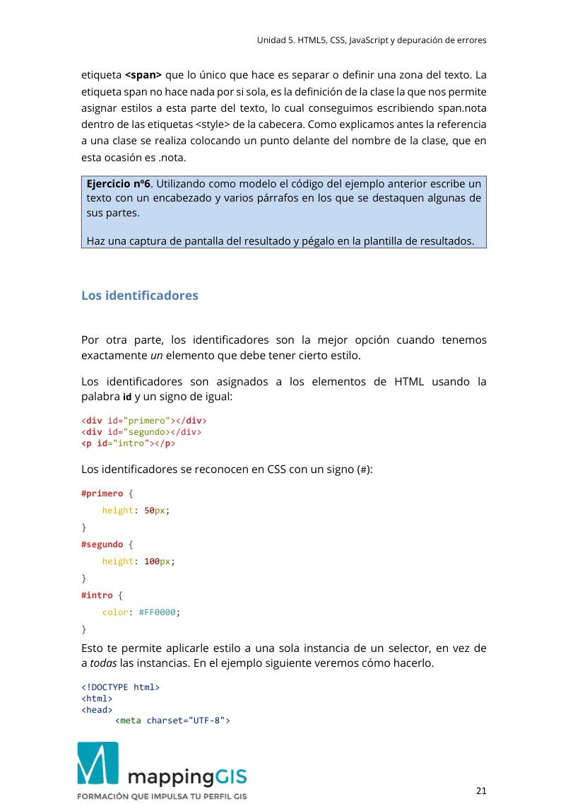
Consultar en el PDF · página 21
HTML/CSS/JS · Ejercicio 7 · Identificadores id
Utilizando como modelo el código del ejemplo anterior escribe dos textos a los que se les asigne estilo s diferentes mediante el empleo de dos identificadores “id”.
Pasos y contexto originales de la clase
Página 21
Unidad 5. HTML5, CSS, JavaScript y depuración de errores
21
etiqueta <span> que lo único que hace es separar o definir una zona del texto. La
etiqueta span no hace nada por si sola, es la definición de la clase la que nos permite
asignar estilos a esta parte del texto, lo cual conseguimos esc ribiendo span.nota
dentro de las etiquetas <style> de la cabecera. Como explicamos antes la referencia
a una clase se realiza colocando un punto delante del nombre de la clase, que en
esta ocasión es .nota.
Ejercicio nº6. Utilizando como modelo el código d el ejemplo anterior escribe un
texto con un encabezado y varios párrafos en los que se destaquen algunas de
sus partes.
Haz una captura de pantalla del resultado y pégalo en la plantilla de resultados.
Los identificadores
Por otra parte, los identificadores son la mejor opción cuando tene mos
exactamente un elemento que debe tener cierto estilo.
Los identificadores son asignados a los elementos de HTML usando la
palabra id y un signo de igual:
<div id="primero"></div>
<div id="segundo></div>
<p id="intro"></p>
Los identificadores se reconocen en CSS con un signo (#):
#primero {
height: 50px;
}
#segundo {
height: 100px;
}
#intro {
color: #FF0000;
}
Esto te permite aplicarle estilo a una sola instancia de un selector, en vez de
a todas las instancias. En el ejemplo siguiente veremos cómo hacerlo.
<!DOCTYPE html>
<html>
<head>
<meta charset="UTF-8">
Página 22
Unidad 5. HTML5, CSS, JavaScript y depuración de errores
22
<title> Practicando con clases </title>
<style>
#texto1 {
font-size: 120%;
color: red;
}
#texto2 {
font-family: Arial;
color: blue;
font-size: 18px;
}
</style>
</head>
<body>
<h2>Declaración Universal de los derechos Humanos</h2>
<p id ="texto1">Artículo 1 </p>
<p id ="texto2">Todos los seres humanos nacen libres e iguales en dignidad y
derechos y, dotados como están de razón y conciencia, deben comportarse
fraternalmente los unos con los otros.</p>
</body>
</html>
El código anterior da como resultado lo siguiente:
Ejercicio nº7. Utilizando como modelo el código del ejemplo anterior escribe dos
textos a los que se les asigne estilo s diferentes mediante el empleo de dos
identificadores “id”.
Haz una captura de pantalla y pégala en la plantilla de resultados.
Ver página 22 del PDF original, con sus capturas
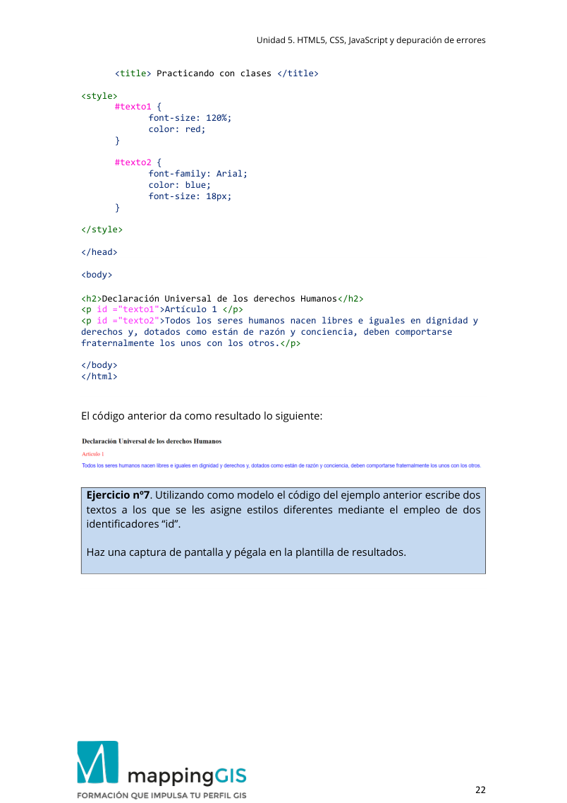
Consultar en el PDF · página 22
HTML/CSS/JS · Ejercicio 8 · Ejecutar JavaScript
Inserta el código JavaScript anterior en un HTML. Ejecútalo y describe en la hoja de resultados lo que sucede.
Pasos y contexto originales de la clase
Página 22
Unidad 5. HTML5, CSS, JavaScript y depuración de errores
22
<title> Practicando con clases </title>
<style>
#texto1 {
font-size: 120%;
color: red;
}
#texto2 {
font-family: Arial;
color: blue;
font-size: 18px;
}
</style>
</head>
<body>
<h2>Declaración Universal de los derechos Humanos</h2>
<p id ="texto1">Artículo 1 </p>
<p id ="texto2">Todos los seres humanos nacen libres e iguales en dignidad y
derechos y, dotados como están de razón y conciencia, deben comportarse
fraternalmente los unos con los otros.</p>
</body>
</html>
El código anterior da como resultado lo siguiente:
Ejercicio nº7. Utilizando como modelo el código del ejemplo anterior escribe dos
textos a los que se les asigne estilo s diferentes mediante el empleo de dos
identificadores “id”.
Haz una captura de pantalla y pégala en la plantilla de resultados.
Página 23
Unidad 5. HTML5, CSS, JavaScript y depuración de errores
23
Introducción a JavaScript. ¿Qué es JavaScript?
Es uno de los lenguajes de programación más importante. ¿Por qué? Porque en él
se programan las aplicaciones para internet y la Web.
Los navegadores modernos soportan la versión JavaScript 1.5 (diciembre de 2009).
Valores
JavaScript tiene todos los valor es que cabría esperar de los lenguajes de
programación: booleanos, números, cadenas, matrices, etc. Todos los valores en
JavaScript tienen propiedades. Cada propiedad tiene una clave (o nombre) y un
valor. Piensa en los campos de un registro. Se utiliza el operador punto (.) para leer
una propiedad (.):
value.propKey
Un ejemplo: La cadena 'texto' tiene la propiedad length
> var str = 'texto';
> str.length
5
Tipos de JavaScript (valores)
number son cantidades y puedes hacer operaciones matemáticas con ellas.
1, 2, 10.5.
strings son secuencias de caracteres, como las letras a-z, los espacios, e
incluso los números. Los strings son muy útiles como etiquetas, nombres y
contenido para tus programas. Para escribir un string, debes ponerlo entre
comillas:
"¿Cuál es tu nombre?"
booleanos. Un booleano puede tener dos valores:
o true (verdadero)
o false (falso).
Puedes usarlos en tu código haciendo sentencias que sean
igual a true o false.
Página 24
Unidad 5. HTML5, CSS, JavaScript y depuración de errores
24
10 > 3 es igual a true
5 < 4 es igual a false
“undefined”: undefined, null
Objetos
Representan agregaciones estructuradas de valores.
Los objetos se agrupan en clases: Object, Array, Date
Todos los valores que no son primitivos son objetos. Los tipos más comunes son:
Objetos planos (tipo objet) pueden ser creados por objetos literales:
{
Nombre: 'Felipe',
Apellidos: 'González'
}
El anterior objeto tiene dos propiedades: el valor de la propiedad nombre
es 'Felipe', el valor de la propiedad apellido es 'Gonzalez'.
Matrices (tipo Array) pueden ser creados por literales de matriz:
['cities', 'countries', 'ocean']
La matriz anterior tiene tres elementos que se puede acceder a través de los
índices numéricos. Por ejemplo, el índice de 'cities' es 0.
Las expresiones regulares (tipo RegExp) pueden ser creados por literales de
expresiones regulares:
/ ^ a + b + $ /
Objeto nulo
Operadores y expresiones
Página 25
Unidad 5. HTML5, CSS, JavaScript y depuración de errores
25
Con los tipos y objetos podemos crear expresiones utilizando operadores.
Por ejemplo las operaciones matemáticas ( +, - , *, / )
5 + 5 => 10
Programa, sentencias y comentarios
Un programa es una secuencia de sentencias que se ejecutan en el orden en que
han sido definidas.
Las sentencias realizan tareas al ejecutarse en un ordenador:
var x = 5
Los comentarios son muy útiles para explicar partes difíciles de tu código o como
recordatorios para ti mismo.
JavaScript tiene dos tipos de comentarios: comentarios de una sola línea y
comentarios multilínea.
Comentarios de una sola línea comienzan con / / y terminan al final de la línea:
x + +; // comentario de una sola línea
Comentarios de varias líneas se delimitan con / * y * /
/ * Este es un
comentario
de varias líneas
* /
Es recomendable utilizar comentarios monolínea //
Variables
Para escribir un código que sea más complejo, necesitamos una forma de 'guardar'
los valores de nuestro código. Esto lo hacemos definiendo una variable con un
nombre específico, que distingue entre mayúsculas y minúsculas.
En JavaScript debemos declarar las variables a través de la palabra reservada var
seguida de la variable.
Se pueden crear va rias variables en una sentencia, separando las definiciones por
comas.
Página 26
Unidad 5. HTML5, CSS, JavaScript y depuración de errores
26
var nombre; // declaramos la variable ‘nombre’
> var x; //creamos la variable x y asigna el valor undefined
> x = 1; //asignamos el valor 1 a x
> y = 2; //asignamos el valor 2 a y. Esta sentencia daría un error
porque no se ha definido la variable y
ReferenceError: y is not defined
Podemos declarar una variable y asignarle un valor al mismo tiempo:
var osm = L.tileLayer();//crea osm y le asignamos el valor de una capa
de teselas
El valor de una variable se puede cambiar fácilmente mediante una sentencia de
asignación.
var osm = L.tileLayer.wms();
Dentro de una variable podemos incluir cualquier cosa (un número, un string, una
fecha, etc)
Página 27
Unidad 5. HTML5, CSS, JavaScript y depuración de errores
27
Sintaxis
Delimitación de sentencias
Los “;” delimitan el final de una sentencia.
Son opcionales, pero se recomienda utilizarlo siempre, porque su omisión puede
dar lugar a sorpresas. Además los programas son más legibles y seguros.
var x = 1; //bien
var x; //no recomendable porque esta como undefined
x = 1 //no recomendable porque falta el ;
var x = 1 //no recomendable porque falta el ;
Nombre de variables
El nombre de una variable debe comenzar por letra, _ o $
x, map, map1, _map, &f
Por lo tanto un nombre de una variable no debe comenzar por números, porque
crearía un error de ejecución.
var #1 = 1; //Error de ejecución
var 1_1 = 1; //Error de ejecución
Tampoco podemos poner como nombre a una variable una palabra reservada.
Las variables son sensibles a mayúsculas y minúsculas:
MiMapa y mimapa son variables distintas.
Orden en la creación de variables
JavaScript es un lenguaje de procedimientos, que va leyendo el código de arriba
hacia abajo, por lo tanto no podemos utilizar una variable que aún no haya sido
creada. Aunque se defina más adelantes. En este ejemplo vemos cómo NO hay que
trabajar en JavaScript:
Página 28
Unidad 5. HTML5, CSS, JavaScript y depuración de errores
28
Este script no mostrará nada, ya que estamos intentando utilizar la capa de OSM en
el mapa, pero el objeto OSM aun no ha sido creado, lo creamos en la línea 30.
El depurador de errores nos ayuda informándonos de que OSM no se ha definido:
Nota
Por el momento no te preocupes por la sintaxis utilizada ni por la depuración de
errores, ya que lo veremos más adelante.
Aquí vemos el script correcto, donde primero creamos la variable y a continuación
la utilizamos:
Página 29
Unidad 5. HTML5, CSS, JavaScript y depuración de errores
29
Declaraciones y expresiones
Para entender la sintaxis de JavaScript, es muy útil saber que tiene dos grandes
categorías sintácticas: declaraciones y expresiones.
Las Declaraciones "hacen cosas". Un programa es una secuencia de declaraciones.
Ejemplo de una declaración, que declara (crea) una variable foo:
var foo;
Las expresiones producen valores. Son el lado derecho de una asignación,
argumentos de funciones, etc. Ejemplo de una expresión:
2 + 1
Funciones útiles
Script con fecha
Un script es un programa JavaScript insertado en una página HTML.
Delimitado por marcaras <script> con atributo type=”text/javascript”.
document.write("Texto") inserta un texto en la página Web:
<!DOCTYPE html>
<html>
<body>
<script type="text/javascript">
document.write("Hoy es: " + new Date ());
</script>
Página 30
Unidad 5. HTML5, CSS, JavaScript y depuración de errores
30
</body>
</html>
Script con expresión
alert("Texto") muestra un mensaje al usuario en una ventana emergente:
<!DOCTYPE html>
<html>
<body>
<script type="text/javascript">
document.write("Hoy es: " + new Date ());
alert ("Hola Mundo");
</script>
</body>
</html>
Otras funciones:
confirm () presenta un mensaje y pide confirmación o rechazo.
prompt (msj) presenta un mensaje y pide un dato de entrada.
Funciones
Una manera de definir una función es a través de una declaración de la función:
function add (param1, param2) {
return param1 + param2;
}
El código anterior define una función add que tiene dos parámetros param1 y
param2 y devuelve la suma de ambos parámetros. Así es como se llama a esa
función:
> add(6, 1)
7
> add('a', 'b')
'ab'
Otra manera de definir add() es a través de una expresión de función:
var add = function (param1, param2) {
return param1 + param2;
};
Esta función tiene cuatro partes.
Página 31
Unidad 5. HTML5, CSS, JavaScript y depuración de errores
31
1. Declara la función usando var, y luego asígnale un nombre.
2. Luego debes usar el comando function para decirle al computador que
estás haciendo una función.
3. El fragmento entre paréntesis es llamado el parámetro. Piensa que es
una palabra de reemplazo a la que le asignamos un valor específico
cuando llamamos a la función.
4. Luego escribe tu código reusable entre { }. Cada línea de código en este
bloque deber terminar con un ;
Condicionales y bucles
Los principales declaraciones en JavaScript para establecer condiciones son:
if, switch, for y while.
- IF
<script>
var mivariable = 9;
if(mivariable < 10) {
alert("El valor es menor que 10");
}
</script>
La declaración if controla la expresión entre paréntesis y procesa las
instrucciones entre llaves si la condición es verdadera. En el código del listado
anterior asignamos el valor 9 a mivariable. Como este valor es inferior al que
indica la condición, nos mostrará el mensaje en la pantalla.
- SWITCH
La declaración switch se utiliza para comprobar múltiples condiciones.
<script>
var mivariable = 3;
switch(mivariable) {
case 5:
alert("El valor es cinco");
break;
case 8:
alert("El valor es ocho");
break;
case 10:
Página 32
Unidad 5. HTML5, CSS, JavaScript y depuración de errores
32
alert("El valor es diez");
break;
default:
alert("El valor es " + mivariable);
}
</script>
La declaración switch evalúa una expresión, compara el resultado con la opción
case que están dentro de las llaves y devuelve el resultado correspondiente. En
el ejemplo anterior creamos una variable a la que asignamos valor 3. A
continuación se pasa a analizar las diferentes opciones. El primer valor es 5,
como no es coincidente con el valor de mivariable pasa al segundo case. De
esta forma continúa el proceso hasta que se cumpla alguna condición. En el
ejemplo que hemos puesto, como no se cumple ninguna de las condiciones llega
la final del proceso y muestra el valor por defecto.
- FOR
La declaración for ejecutará el código entre llaves mientras la condición indicada
en el segundo parámetro sea verdadera. Utiliza la sintaxis for (inicialización;
condición, incremento).
<script>
var mivariable = 9;
for(var f = 0; f < mivariable; f++) {
alert("El valor actual es " + f);
}
</script>
El primer valor de la condición for es f=0. Este será el valor de inicialización.
La condición que se marca es que ese valor sea menor que el indicado en
mivariable.
En caso de que la condición sea verdadera el código entre llaves es ejecutado. Al
finalizar el intérprete de JavaScript ejecuta el tercer parámetro de for (es decir
f++, con el que se incrementará en una unidad el valor de f) y comprueba la
condición nuevamente. Si la condición es verdadera, las instrucciones son
ejecutadas una vez más. El bucle continúa hasta que la condición es falsa.
Ejercicio nº8. Inserta el código JavaScript anterior en un HTML. Ejecútalo y
describe en la hoja de resultados lo que sucede.
Ver página 32 del PDF original, con sus capturas
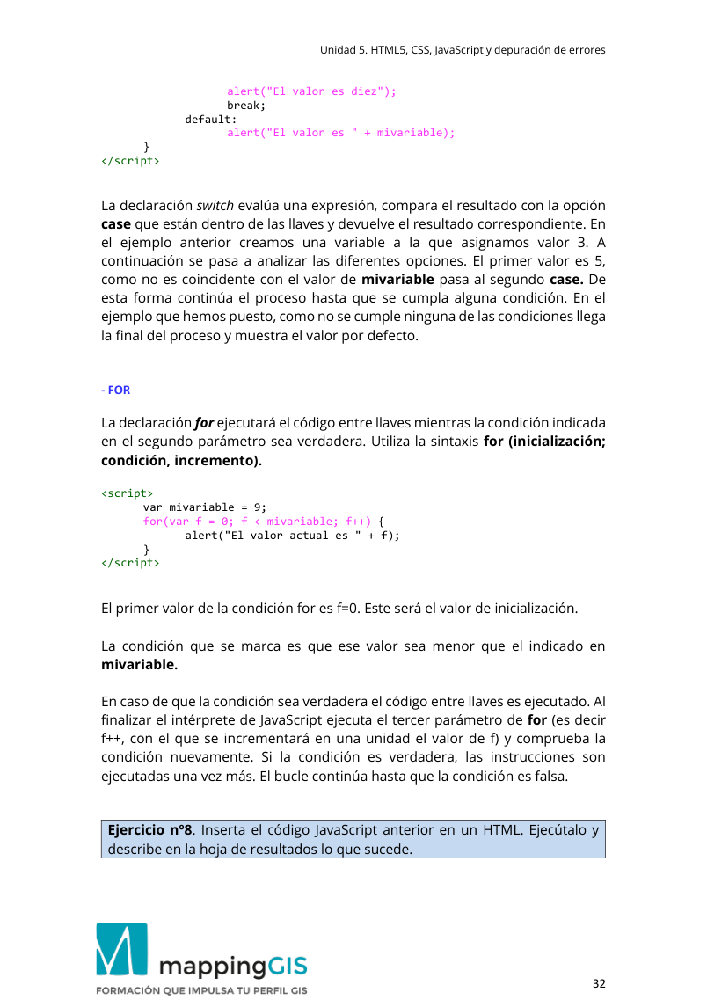
Consultar en el PDF · página 32
HTML/CSS/JS · Ejercicio 9 · Depurar la página
Nos han pasado una web pero su código tiene varios errores. Utiliza un depurador para corregirlos y poder ver la web correctamente.
Pasos y contexto originales de la clase
Página 32
Unidad 5. HTML5, CSS, JavaScript y depuración de errores
32
alert("El valor es diez");
break;
default:
alert("El valor es " + mivariable);
}
</script>
La declaración switch evalúa una expresión, compara el resultado con la opción
case que están dentro de las llaves y devuelve el resultado correspondiente. En
el ejemplo anterior creamos una variable a la que asignamos valor 3. A
continuación se pasa a analizar las diferentes opciones. El primer valor es 5,
como no es coincidente con el valor de mivariable pasa al segundo case. De
esta forma continúa el proceso hasta que se cumpla alguna condición. En el
ejemplo que hemos puesto, como no se cumple ninguna de las condiciones llega
la final del proceso y muestra el valor por defecto.
- FOR
La declaración for ejecutará el código entre llaves mientras la condición indicada
en el segundo parámetro sea verdadera. Utiliza la sintaxis for (inicialización;
condición, incremento).
<script>
var mivariable = 9;
for(var f = 0; f < mivariable; f++) {
alert("El valor actual es " + f);
}
</script>
El primer valor de la condición for es f=0. Este será el valor de inicialización.
La condición que se marca es que ese valor sea menor que el indicado en
mivariable.
En caso de que la condición sea verdadera el código entre llaves es ejecutado. Al
finalizar el intérprete de JavaScript ejecuta el tercer parámetro de for (es decir
f++, con el que se incrementará en una unidad el valor de f) y comprueba la
condición nuevamente. Si la condición es verdadera, las instrucciones son
ejecutadas una vez más. El bucle continúa hasta que la condición es falsa.
Ejercicio nº8. Inserta el código JavaScript anterior en un HTML. Ejecútalo y
describe en la hoja de resultados lo que sucede.
Página 33
Unidad 5. HTML5, CSS, JavaScript y depuración de errores
33
- WHILE
La declaración while solo requiere la declaración de la condición entre
paréntesis y el código a ser ejecutado entre llaves. El bucle se ejecutará hasta
que la condición sea falsa. Veamos un ejemplo:
<script>
var mivariable = 9;
do {
mivariable++;
}while (mivariable > 100);
alert( "El valor de mivariable es " + mivariable);
</script>
En este código estamos indicando como condición que "mivariable" sea mayor
de 100. Como el valor asignado inicialmente a la variable fue 9, está condición
es falsa, pero como estamos usando la condición do while, el código dentro del
bucle es ejecutado una vez antes de que la condición sea evaluada. La ventana
emergente mostrará el valor 10 (9+1)
Página 34
Unidad 5. HTML5, CSS, JavaScript y depuración de errores
34
Depuración de JavaScript
Hasta hace unos años, la depuración de JavaScript en sitios web era horrible; escribir
código en un editor de texto, añadir declaraciones de alerta para inspeccionar
valores, y repetir hasta que las cosas funcionasen.
El editor de texto sigue siendo aún la principal herramienta para los desarrolladores
de JavaScript, pero actualmente ya existen ayudas como el resaltado de sintaxis, el
autocompletado de código y otras herramientas específicas de lenguaje.
Dependiendo de dónde provengan los desarrolladores, las opciones más populares
son vi, UltraEdit, TextMate o gedit. También hay plugins para IDEs como Eclipse o
distribuciones completas de Eclipse realizadas para el desarrollo de JavaScript, como
Aptana Studio.
JavaScript es ahora al menos tan importante como HTML para crear páginas web, y
los principales navegadores incluyen ya herramientas de depuración para
desarrolladores.
Corrección de errores con Firefox
Para depurar un script con Firefox, solamente es necesario acceder a la opción
Consola de error dentro del menú Herramientas.
La consola de errores permite diferenciar los mensajes de información, los
mensajes de aviso y los mensajes de error. Además, permite visualizar todos los
errores de la página simultáneamente. Por cada error detectado se indica la posible
solución mediante un mensaje en inglés y se muestra el trozo de código del script
donde se ha producido el error. Además, pulsando sobre el enlace incluido se
accede a la línea concreta del archivo concreto donde se ha producido el error.
Ejemplo práctico
Página 35
Unidad 5. HTML5, CSS, JavaScript y depuración de errores
35
Hemos creado un HTML con la API de OpenLayers y el mapa no aparece, ¡qué
horror!
Para acceder a las herramientas de desarrollo debemos hacer botón derecho
Inspeccionar elemento:
Página 36
Unidad 5. HTML5, CSS, JavaScript y depuración de errores
36
A continuación pinchamos sobre la pestaña Consola y vemos el error:
Página 37
Unidad 5. HTML5, CSS, JavaScript y depuración de errores
37
A la derecha se muestra la línea en la que se ha detectado un error, en este caso se
trata de la línea 33, en la que hay un problema.
Si pinchamos ahí, se abrirá una nueva pestaña con la línea del código que debemos
corregir:
Página 38
Unidad 5. HTML5, CSS, JavaScript y depuración de errores
38
En este caso el problema es que hemos escrito
Ol.layer.Tile
Y debería poner
ol.layer.Tile
Corregimos el código en nuestro editor de texto , guardamos y actualizamos el
navegador.
Página 39
Página 40
Unidad 5. HTML5, CSS, JavaScript y depuración de errores
40
Depuración de errores con Chrome
Al igual que con Firefox, u na manera muy sencilla es hacer botón derecho con el
ratón y seleccionar la opción Inspeccionar.
De este modo se abren las Herramientas de desarrollo de Google Chrome.
Las Herramientas de desarrollo pueden ser separadas de la ventana del navegador
que estamos depurando, haciendo clic en el icono de la pantalla en la esquina
inferior izquierda de las herramientas de desarrollo.
La primera pestaña, Elements, es útil para inspeccionar el estado actual de la DOM
y para ver los estilos aplicados a todos los recursos de hojas de estilo. Ten en cuenta
que tanto el DOM y los estilos se pueden modificar en esta ficha, para ver cómo
podrían afectar a la apariencia de la página. Nótese, sin embargo, que estos cambios
no se pueden conservar en la fuente de origen, por lo que son sólo temporales.
La pestaña Console mostrará los errores.
Al hacer clic sobre la línea en la que se encuentra el error, se mostrará el error en la
pestaña Sources:
Página 41
Unidad 5. HTML5, CSS, JavaScript y depuración de errores
41
Corregimos el código en nuestro editor de texto , guardamos y actualizamos el
navegador.
Ejercicio nº9. Nos han pasado una web pero su código tiene varios errores.
Utiliza un depurador para corregirlos y poder ver la web correctamente.
Este es el código:
<!DOCTYPE html>
<html
<head>
<title> Depuración de errores </title>
<style>
.p {
font-family: Arial
color: red;
font-size 18px;
}
</style>
</head>
<body>
<!--Insertando una imagen -->
<p Mapa de Leaflet</p>
<img
src="https://upload.wikimedia.org/wikipedia/commons/thumb/5/53/Island_of_Ca
lifornia.jpg/800px-Island_of_California.jpg"></img>
<div>
<script type="text/javascript">
var #x = Un mapa poco interactivo /creamos una variable
denominada x
document.write(y);
</script>
</div>
</body>
</html>
Ver página 41 del PDF original, con sus capturas
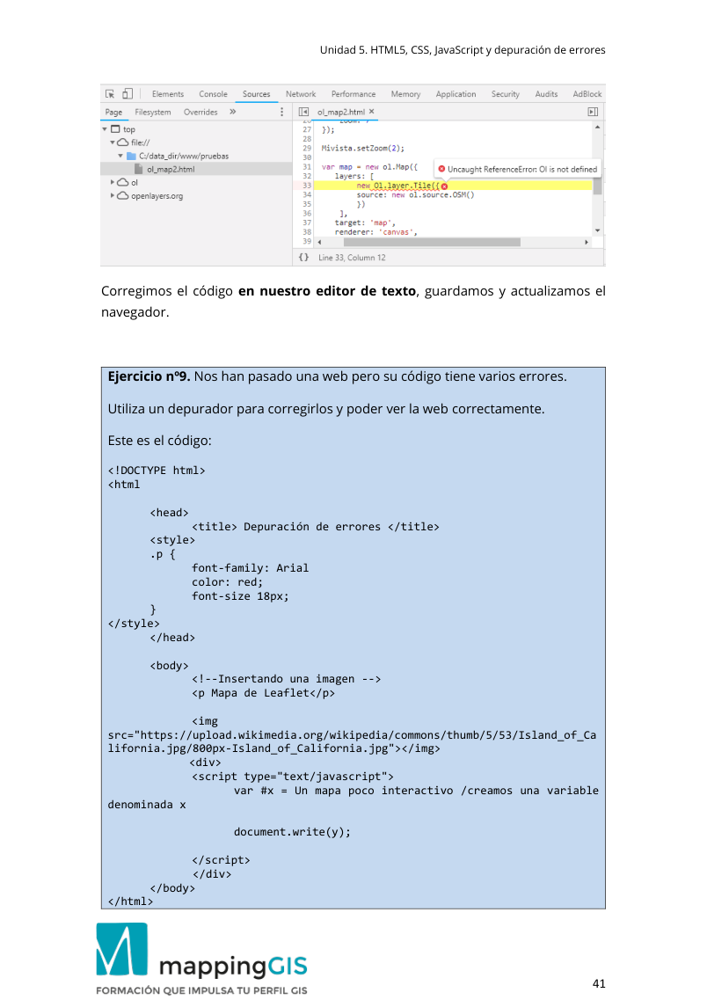
Consultar en el PDF · página 41
Leaflet: PDF de clase (credenciales de ejemplo omitidas).
Leaflet · Ejercicio 1 · Primer mapa
Pega el resultado de tu primer mapa realizado con Leaflet (L_map1.html) en la plantilla de resultados.
Pasos y contexto originales de la clase
Página 3
Ejercicio 5.1. Leaflet
3
Creación de un mapa sencillo con la API de Leaflet
Como hemos hecho anteriormente, e l primer paso para la creación de cualquier
mapa web JavaScript es elaborar el marco HTML básico. Esta es la estructura que
tendrá nuestro HTML:
<!DOCTYPE html>
<html>
<head>
<meta charset="utf-8" />
<meta name="viewport" content="width=device-width, initial-scale=1.0,
maximum-scale=1.0, user-scalable=no" />
<style>
</style>
</head>
<body>
<div id = 'map'>
</div>
</body>
</html>
Las etiquetas <meta> que hemos definido sirven para definir la codificación de
caracteres y la visualización en pantalla. Esta última combinada con los estilos que
veremos más adelante hacen que el mapa ocupe toda la pantalla del dispositivo
independientemente de su tamaño. Es decir que el mapa puede verse en un
dispositivo móvil o en la pantalla del ordenador.
Utiliza un editor de texto básico. Copia el texto anterior en un archivo nuevo y
guardarlo en la ruta: \data_dir\www con el nombre L_map1.html.
Primeros pasos
En primer lugar incluiremos en la cabecera <head> de nuestra página web la librería
JavaScript leaflet.js y la hoja de estilo leaflet.css :
<link rel="stylesheet" href="https://unpkg.com/leaflet@1.9.4/dist/leaflet.css"/>
<script src="https://unpkg.com/leaflet@1.9.4/dist/leaflet.js"></script>
Página 4
Ejercicio 5.1. Leaflet
4
Dentro de la etiqueta <body> encontramos el marcado para el mapa, que genera un
único elemento de documento. También damos al contenedor un atributo id para
que podamos hacer referencia a él en nuestro código:
<div id= 'map'></div>
Estilo del mapa
Nos aseguramos que el contenedor de mapa tenga un tamaño definido, dentro de
la etiqueta <style> lo fijamos en CSS:
body {
padding: 0;
margin: 0;
}
html, body, #map {
height: 100%;
}
Código de inicialización del mapa
Crearemos un mapa del centro de Valladolid con la capa base de OpenStreetMap .
Primero inicializaremos el mapa y fijaremos su vista a nuestras coordenadas
geográficas y un nivel de zoom. Vamos a añadir el siguiente código dentro del
<script>:
var map = L.map('map', {
center: [41.66, -4.72],
zoom: 15,
});
L.map es la clase central de la API. Se usa para crear y manipular el mapa.
La sintaxis de la clase L.map es la siguiente:
L.map( <HTMLElement|String> id,
<Map options> options? )
A continuación, añadimos un mapa base como tile layer , en este caso las
imágenes de OSM. Crear un tile layer lleva implícito establecer la URL, el texto
con la atribución y el máximo nivel de zoom de la capa:
Página 5
Ejercicio 5.1. Leaflet
5
L.tileLayer('https://{s}.tile.openstreetmap.org/{z}/{x}/{y}.png', {
attribution: '© <a href="http://osm.org/copyright">OpenStreetMap</a>'
+ 'contributors',
maxZoom: 18
}).addTo(map);
Para incluir esta capa en nuestro mapa como opción, vamos a crear una variable
llamada OSM y la añadimos como layer a la clase map.
var OSM = L.tileLayer('https://{s}.tile.openstreetmap.org/{z}/{x}/{y}.png', {
attribution: '© <a href="http://osm.org/copyright">OpenStreetMap</a>'
+ 'contributors',
maxZoom: 18
}); // eliminado el .addTo(map) porque se añade desde la clase map
Y modificamos la creación del mapa para añadir la opción de incluir las capas:
var map = L.map('map', {
center: [41.66, -4.72],
layers: OSM,
zoom: 15,
});
Recuerda que es necesario crear la variable antes de poder utilizarla en el mapa.
Por defecto, en Leaflet la rueda del ratón (el scroll) sirve para acercarse o alejarse
en el mapa. Sin embargo , esta acción no es responsive si trabajamos en ento rnos
móviles, por lo tanto conviene modificar la opción scrollWheelZoom a falso:
var map = L.map('map', {
center: [41.66, -4.72],
layers: OSM,
zoom: 15,
scrollWheelZoom: false,
});
Por último, añadiremos un control de escala al mapa:
L.control.scale()
.addTo(map);
Página 6
Ejercicio 5.1. Leaflet
6
Importante: Para evita errores, no debemos abrir los visores web haciendo doble
clic sobre ellos. Debemos abrirlos escribiendo la siguiente url en el navegador
web:
http://localhost:8080/geoserver/www/L_map1.html
El resultado sería un mapa como este:
Página 7
Ejercicio 5.1. Leaflet
7
El código fuente utilizado es el siguiente:
<!DOCTYPE html>
<html>
<head>
<meta charset="utf-8" />
<meta name="viewport" content="width=device-width, initial-scale=1.0, maximum-
scale=1.0, user-scalable=no" />
<link rel="stylesheet" href="https://unpkg.com/leaflet@1.9.4/dist/leaflet.css"/>
<script src="https://unpkg.com/leaflet@1.9.4/dist/leaflet.js"></script>
<style>
body {
padding: 0;
margin: 0;
}
html, body, #map {
height: 100%;
}
</style>
</head>
<body>
<div id="map"></div>
<script>
var OSM = L.tileLayer('https://{s}.tile.openstreetmap.org/{z}/{x}/{y}.png', {
attribution: '© <a href="http://osm.org/copyright">OpenStreetMap</a>'
+'contributors',
maxZoom: 18
});
var map = L.map('map', {
//scrollWheelZoom: false,
center: [41.66, -4.72],
zoom: 13,
layers: OSM
});
L.control.scale().addTo(map);
</script>
</body>
</html>
Ejercicio nº 1. Pega el resultado de tu primer mapa realizado con Leaflet
(L_map1.html) en la plantilla de resultados.
Ver página 7 del PDF original, con sus capturas
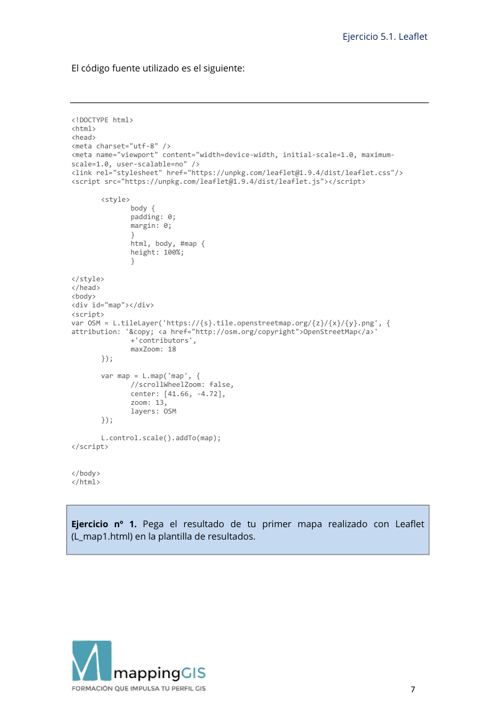
Consultar en el PDF · página 7
Leaflet · Ejercicio 2 · Capas WMS
Añade al mapa las capas rivers, countries y cities.
Pasos y contexto originales de la clase
Página 7
Ejercicio 5.1. Leaflet
7
El código fuente utilizado es el siguiente:
<!DOCTYPE html>
<html>
<head>
<meta charset="utf-8" />
<meta name="viewport" content="width=device-width, initial-scale=1.0, maximum-
scale=1.0, user-scalable=no" />
<link rel="stylesheet" href="https://unpkg.com/leaflet@1.9.4/dist/leaflet.css"/>
<script src="https://unpkg.com/leaflet@1.9.4/dist/leaflet.js"></script>
<style>
body {
padding: 0;
margin: 0;
}
html, body, #map {
height: 100%;
}
</style>
</head>
<body>
<div id="map"></div>
<script>
var OSM = L.tileLayer('https://{s}.tile.openstreetmap.org/{z}/{x}/{y}.png', {
attribution: '© <a href="http://osm.org/copyright">OpenStreetMap</a>'
+'contributors',
maxZoom: 18
});
var map = L.map('map', {
//scrollWheelZoom: false,
center: [41.66, -4.72],
zoom: 13,
layers: OSM
});
L.control.scale().addTo(map);
</script>
</body>
</html>
Ejercicio nº 1. Pega el resultado de tu primer mapa realizado con Leaflet
(L_map1.html) en la plantilla de resultados.
Página 8
Ejercicio 5.1. Leaflet
8
Capas teseladas WMS
Ahora que ya tenemos una capa base, vamos a añadir nuest ra capa de ciudades
como un WMS, a través de la clase L.tileLayer.WMS
Haz una copia del archivo L_map1.html y renómbralo como L_map2.html
En primer lugar, vamos a cambiar el nivel de zoom a 4.
zoom: 4,
Ahora añadiremos debajo de la capa de OpenStreetMap el código necesario para
agregar una capa WMS:
var cities = L.tileLayer.wms("http://localhost:8080/geoserver/wms", {
layers: 'cities',
format: 'image/png',
transparent: true,
tiled: true,
attribution: "Natural Earth"
});
Para forzar a que se utilicen las capas teseladas hemos añadido el parámetro:
tiled: true.
Ahora agregamos la capa a nuestro mapa:
layers: [osm, cities]
Ejercicio nº2. Añade al mapa las capas rivers, countries y cities.
En la capa cities utiliza la propiedad styles para aplicarle el estilo cities_filter.
Haz una captura de pantalla con el resultado.
El orden en el que se localicen en el código determinará el orden en el que se van
representando las capas. P or lo tanto , deberás jugar con el orden de las capas y
con la transparencia de las capas.
Ver página 8 del PDF original, con sus capturas
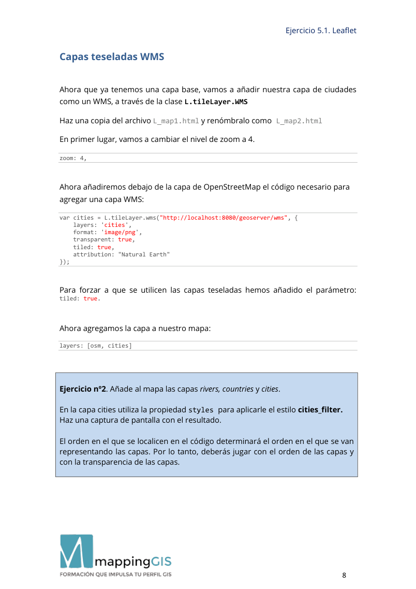
Consultar en el PDF · página 8
Leaflet · Ejercicio 3 · Geometrías y circleMarker
A las geometrías vistas añade además un marcador circular denominado circleMarker, debes utilizar la clase L.circleMarker.
Pasos y contexto originales de la clase
Página 8
Ejercicio 5.1. Leaflet
8
Capas teseladas WMS
Ahora que ya tenemos una capa base, vamos a añadir nuest ra capa de ciudades
como un WMS, a través de la clase L.tileLayer.WMS
Haz una copia del archivo L_map1.html y renómbralo como L_map2.html
En primer lugar, vamos a cambiar el nivel de zoom a 4.
zoom: 4,
Ahora añadiremos debajo de la capa de OpenStreetMap el código necesario para
agregar una capa WMS:
var cities = L.tileLayer.wms("http://localhost:8080/geoserver/wms", {
layers: 'cities',
format: 'image/png',
transparent: true,
tiled: true,
attribution: "Natural Earth"
});
Para forzar a que se utilicen las capas teseladas hemos añadido el parámetro:
tiled: true.
Ahora agregamos la capa a nuestro mapa:
layers: [osm, cities]
Ejercicio nº2. Añade al mapa las capas rivers, countries y cities.
En la capa cities utiliza la propiedad styles para aplicarle el estilo cities_filter.
Haz una captura de pantalla con el resultado.
El orden en el que se localicen en el código determinará el orden en el que se van
representando las capas. P or lo tanto , deberás jugar con el orden de las capas y
con la transparencia de las capas.
Página 9
Página 10
Ejercicio 5.1. Leaflet
10
Añadiendo capas de interfaz de usuario al mapa
Insertar un marcador
Ahora vamos a agregar fácilmente otros elementos al mapa . Haz una copia del
archivo L_map1.html y renómbralo como L_map3.html
Primero creamos un objeto marker utilizando la clase L.marker:
var marker = L.marker(
[41.66, -4.71]
).addTo(map)
Debemos incluir esta sentencia debajo de la creación del objeto mapa, ya que
estamos utilizando el método .addTo
Podemos añadir algunas opciones más a este marcador:
draggable indica si el marcador puede ser movible o no con el ratón.
title: Texto para la información sobre la herramienta que aparece sobre el
indicador.
Podemos añadir una ventana emergente con un texto que se abrirá al hacer clic
sobre el marcador. Para ello utilizamos el método bindPopup:
.bindPopup('Universidad de Valladolid');
Si además queremos que el mapa solo muestre un pop up a la vez podemos
utilizar el método .openPopup()
Veamos cómo quedaría el código del marcador:
var marker = L.marker([41.66, -4.71], {
draggable: true,
title: 'pincha aquí'
}).addTo(map)
.bindPopup('Universidad de Valladolid')
.openPopup();
Página 11
Ejercicio 5.1. Leaflet
11
Este marcador podemos personalizarlo incluyendo algún icono que tengamos.
Cómo insertar un icono
Un icono marcador en Leaflet se define por un objeto L.Icon, que es pasado como
una opción cuando creamos marcadores. Vamos a crear un icono con el logo de
MappingGIS:
//Añadir un icono de marcador
var myIcon = L.icon({
iconUrl: 'https://openlayers.org/assets/theme/img/logo70.png',
iconSize: [30, 30],
popupAnchor: [-1, -10]
});
Ahora ponemos el marcador en el mapa:
var marker2 = L.marker([41.65246, -4.6982], {icon: myIcon})
.addTo(map)
.bindPopup("Localización de <b>MappingGIS.com </b>");
Página 12
Ejercicio 5.1. Leaflet
12
Capas vectoriales
Agregar un círculo
Para añadir un círculo sobre el mapa utilizaremos la clase L.circle. D ebemos
especificar las coordenadas del centro como primer argumento ([41.658, -4.725]);
el radio en metros como segundo argumento (700); y podemos controlar qué
aspecto tendrá incluyendo opciones como último argumento (¡opcional y dentro
de corchetes!) cuando creamos el objeto:
//Añadir un círculo
var circle = L.circle([41.658, -4.725], 700, {
color: 'red',
fillColor: '#f03',
fillOpacity: 0.5
}).addTo(map);
Añadimos un popup a nuestro círculo:
circle.bindPopup("Centro de la ciudad");
Página 13
Ejercicio 5.1. Leaflet
13
Agregar polígonos
Para añadir un polígono sobre el mapa utilizaremos la clase L.polygon. Debemos
especificar las coordenadas de los vértices:
//Añadir un polígono
var polygon = L.polygon([
[41.67778, -4.72163],
[41.67349, -4.71511],
[41.66958, -4.72017],
[41.67169, -4.72515]
]).addTo(map)
.bindPopup ('Mercaolid');
Agregar etiquetas
Aprovechando esta capa vectorial, a la que hemos denominado polygon vamos a
añadirle una etiqueta que muestre un texto.
Para ello usamos el método bindTooltip de la clase L.Tooltip.
polygon.bindTooltip ("Soy una etiqueta", {
permanent: false
})
Como hemos visto en la teoría, la clase tooltip tiene varias opciones: pane, offset,
direction, permanent, stiky, opacity.
En el ejemplo anterior hemos añadido dentro de los corchetes la opción permanent,
pero como ves su valor está establecido a false, que es el valor que adquiere por
defecto. Modifica este valor a verdadero (true) y añade alguna opción más.
Página 14
Ejercicio 5.1. Leaflet
14
Crear una línea
Para añadir una línea sobre el mapa utilizaremos la clase L.polyline. Debemos
especificar las coordenadas de los vértices:
//Añadir una línea
var pointA = new L.LatLng(41.65925, -4.70404);
var pointB = new L.LatLng(41.65166, -4.70421);
var latlngs = [pointA, pointB];
var polyline = L.polyline(
latlngs, {color: 'red'}
)
.addTo(map)
.bindPopup ('Avda. Juan Carlos I');
Ejercicio nº 3. A las geometrías vistas añade además un marcador circular
denominado circleMarker, debes utilizar la clase L.circleMarker.
Haz una captura de pantalla con el resultado del mapa L_map3.html
Trabajando con grupos de capas
En este ejercicio crearemos un grupo de capas que contenga todas las geometrías
creadas hasta ahora, para gestionarlas de formas más sencilla.
Haz una copia del archivo L_map3.html y renómbralo como L_map4.html
Comenta TODOS los métodos .addTo(map) de las geometrías que participarán en el
grupo, que serán:
Ver página 14 del PDF original, con sus capturas
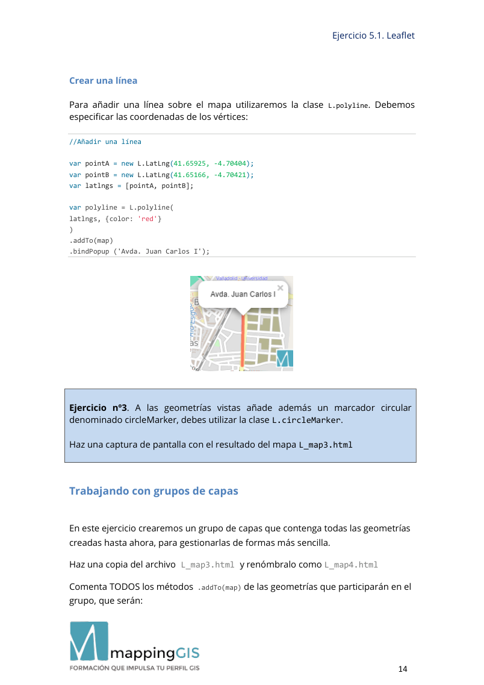
Consultar en el PDF · página 14
Leaflet · Ejercicio 4 · Ventana emergente
Haz una captura de pantalla con el mapa L_map4.html y el mensaje al hacer clic sobre un elemento.
Pasos y contexto originales de la clase
Página 14
Ejercicio 5.1. Leaflet
14
Crear una línea
Para añadir una línea sobre el mapa utilizaremos la clase L.polyline. Debemos
especificar las coordenadas de los vértices:
//Añadir una línea
var pointA = new L.LatLng(41.65925, -4.70404);
var pointB = new L.LatLng(41.65166, -4.70421);
var latlngs = [pointA, pointB];
var polyline = L.polyline(
latlngs, {color: 'red'}
)
.addTo(map)
.bindPopup ('Avda. Juan Carlos I');
Ejercicio nº 3. A las geometrías vistas añade además un marcador circular
denominado circleMarker, debes utilizar la clase L.circleMarker.
Haz una captura de pantalla con el resultado del mapa L_map3.html
Trabajando con grupos de capas
En este ejercicio crearemos un grupo de capas que contenga todas las geometrías
creadas hasta ahora, para gestionarlas de formas más sencilla.
Haz una copia del archivo L_map3.html y renómbralo como L_map4.html
Comenta TODOS los métodos .addTo(map) de las geometrías que participarán en el
grupo, que serán:
Página 15
Ejercicio 5.1. Leaflet
15
polyline,
polygon,
circle,
circleMarker,
marker,
marker2
Deberían quedar de este modo
var circle = L.circle([41.658, -4.725], 700, {
color: 'red',
fillColor: '#f03',
fillOpacity: 0.5
})//.addTo(map)
;
Abre el mapa. No deberías ver ninguna geometría.
Ahora vamos a crear un grupo de capas que incluya todas las geometrías y las
añadimos al mapa:
var geometrias = L.layerGroup([polyline, polygon, circle, circleMarker, marker,
marker2])
.addTo(map);
Utilizando el método eachLayer iteramos sobre c ada una de las capas del grupo
para mostrar un mensaje en una ventana emergente:
geometrias.eachLayer(function (layer) {
layer.bindPopup('Pertenezco a un grupo de geometrías');
});
Ejercicio nº4. Haz una captura de pantalla con el mapa L_map4.html y el mensaje
al hacer clic sobre un elemento.
Ver página 15 del PDF original, con sus capturas
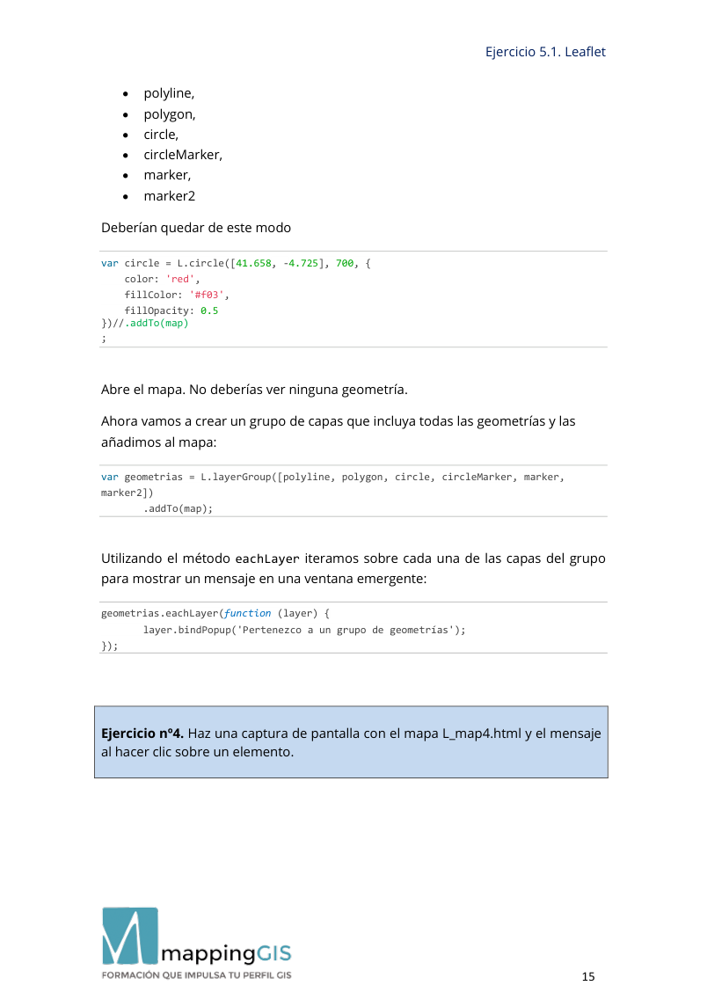
Consultar en el PDF · página 15
Leaflet · Ejercicio 5 · Eventos
Haz una captura de pant alla con el resultado del mapa L_map5.html
Pasos y contexto originales de la clase
Página 15
Ejercicio 5.1. Leaflet
15
polyline,
polygon,
circle,
circleMarker,
marker,
marker2
Deberían quedar de este modo
var circle = L.circle([41.658, -4.725], 700, {
color: 'red',
fillColor: '#f03',
fillOpacity: 0.5
})//.addTo(map)
;
Abre el mapa. No deberías ver ninguna geometría.
Ahora vamos a crear un grupo de capas que incluya todas las geometrías y las
añadimos al mapa:
var geometrias = L.layerGroup([polyline, polygon, circle, circleMarker, marker,
marker2])
.addTo(map);
Utilizando el método eachLayer iteramos sobre c ada una de las capas del grupo
para mostrar un mensaje en una ventana emergente:
geometrias.eachLayer(function (layer) {
layer.bindPopup('Pertenezco a un grupo de geometrías');
});
Ejercicio nº4. Haz una captura de pantalla con el mapa L_map4.html y el mensaje
al hacer clic sobre un elemento.
Página 16
Ejercicio 5.1. Leaflet
16
Trabajando con eventos
Cada vez que algo ocurre en Leaflet, por ejemplo, cuando el usuario hace clic en
un marcador o el mapa cambia de zoom, el objeto correspondiente envía un
evento que se puede suscribir a una función. Esto nos permite reaccionar a la
interacción del usuario.
Haz una copia del archivo L_map4.html y renómbralo como L_map5.html
function onMapClick(e) {
alert("Has hecho clic en " + e.latlng);
}
map.on('click', onMapClick);
Cada objeto tiene su propio conjunto de eventos . El primer argumento de la
función es el objeto del evento, que contiene información útil sobre el evento que
ocurrirá.
En este caso el objeto de l evento click ( e en nuestro ejemplo) tiene la propiedad
latlng, que es la ubicación en la que ocurre el clic.
Ejercicio nº 5. Haz una captura de pant alla con el resultado del mapa
L_map5.html
Controles
Leaflet por defecto solamente incluye dos controles p or defecto: zoom y
atribución.
La clase base para todos los controles es L.control. Implementa la interfaz
IControl.
La sintaxis es:
L.control( <Control options> options? )
Las opciones irán siempre entre corchetes {}.
Ver página 16 del PDF original, con sus capturas
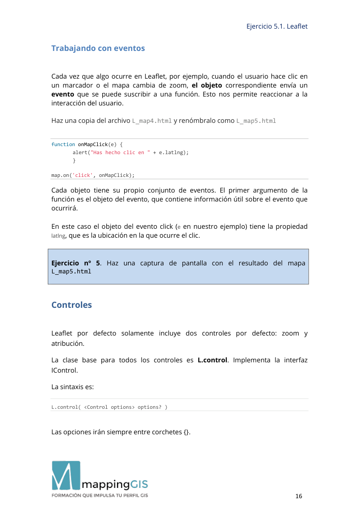
Consultar en el PDF · página 16
Leaflet · Ejercicio 6 · Escala
Cambia el valor del máximo ancho del control de escala a 75 pixeles. Haz una captura de pantalla con el resultado del mapa L_map6.html
Pasos y contexto originales de la clase
Página 16
Ejercicio 5.1. Leaflet
16
Trabajando con eventos
Cada vez que algo ocurre en Leaflet, por ejemplo, cuando el usuario hace clic en
un marcador o el mapa cambia de zoom, el objeto correspondiente envía un
evento que se puede suscribir a una función. Esto nos permite reaccionar a la
interacción del usuario.
Haz una copia del archivo L_map4.html y renómbralo como L_map5.html
function onMapClick(e) {
alert("Has hecho clic en " + e.latlng);
}
map.on('click', onMapClick);
Cada objeto tiene su propio conjunto de eventos . El primer argumento de la
función es el objeto del evento, que contiene información útil sobre el evento que
ocurrirá.
En este caso el objeto de l evento click ( e en nuestro ejemplo) tiene la propiedad
latlng, que es la ubicación en la que ocurre el clic.
Ejercicio nº 5. Haz una captura de pant alla con el resultado del mapa
L_map5.html
Controles
Leaflet por defecto solamente incluye dos controles p or defecto: zoom y
atribución.
La clase base para todos los controles es L.control. Implementa la interfaz
IControl.
La sintaxis es:
L.control( <Control options> options? )
Las opciones irán siempre entre corchetes {}.
Página 17
Ejercicio 5.1. Leaflet
17
Una opción común para todos los controles es position: la posición inicial del
control en el mapa.
Las posiciones posibles son: topleft, topright, bottomleft, bottomright.
Control de escala
Ya hemos visto en el ejercicio nº1 cómo incluir un control de escala:
L.control.scale()
.addTo(map);
Haz una copia del archivo L_map2.html y renómbralo como L_map6.html
Vamos a incluir ahora algunas opciones. En la referencia de la API
(http://leafletjs.com/reference.html#control-scale) podemos ver que la posición
por defecto del control es bottomleft.
Vamos a incluir una opción para modificar la posición del control a la parte inferior
derecha:
L.control.scale({position: 'bottomright'})
.addTo(map);
Página 18
Ejercicio 5.1. Leaflet
18
Las opciones metric e imperial vienen habilitadas por defecto (valor true), pero se
pueden cambiar a false:
L.control.scale({imperial: false}).addTo(map);
Por lo tanto, al incluir varias opciones el resultado sería:
L.control.scale({
position: 'bottomright',
imperial: false
}).addTo(map);
Ejercicio nº 6. Cambia el valor del máximo ancho del control de escala a 75
pixeles. Haz una captura de pantalla con el resultado del mapa L_map6.html
Control de capas
Leaflet tiene un bonito control que nos permite controlar que capas queremos ver
en el mapa.
Hay dos tipos de capas:
capas base (baseLayers) que son mutuamente excluyentes (sólo una puede
ser visible en el mapa).
Capas superpuestas ( overlays): el resto de capas que ponemos sobre las
capas base.
Haz una copia del archivo L_map2.html y renómbralo como L_map7.html
En este ejercicio, queremos tener una capa base y dos overlays que se puedan
activar y desactivar. Vamos a crear primero las variables para las capas:
var osm = new L.tileLayer('https://{s}.tile.openstreetmap.org/{z}/{x}/{y}.png', {
attribution: '© <a href="http://osm.org/copyright">OpenStreetMap</a>
contributors',
maxZoom: 18
});
Ver página 18 del PDF original, con sus capturas
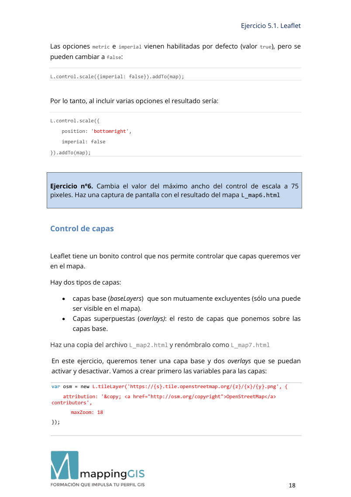
Consultar en el PDF · página 18
Leaflet · Ejercicio 7 · Control de capas
Haz una captura de pantalla con el resultado del mapa L_map7.html
Pasos y contexto originales de la clase
Página 18
Ejercicio 5.1. Leaflet
18
Las opciones metric e imperial vienen habilitadas por defecto (valor true), pero se
pueden cambiar a false:
L.control.scale({imperial: false}).addTo(map);
Por lo tanto, al incluir varias opciones el resultado sería:
L.control.scale({
position: 'bottomright',
imperial: false
}).addTo(map);
Ejercicio nº 6. Cambia el valor del máximo ancho del control de escala a 75
pixeles. Haz una captura de pantalla con el resultado del mapa L_map6.html
Control de capas
Leaflet tiene un bonito control que nos permite controlar que capas queremos ver
en el mapa.
Hay dos tipos de capas:
capas base (baseLayers) que son mutuamente excluyentes (sólo una puede
ser visible en el mapa).
Capas superpuestas ( overlays): el resto de capas que ponemos sobre las
capas base.
Haz una copia del archivo L_map2.html y renómbralo como L_map7.html
En este ejercicio, queremos tener una capa base y dos overlays que se puedan
activar y desactivar. Vamos a crear primero las variables para las capas:
var osm = new L.tileLayer('https://{s}.tile.openstreetmap.org/{z}/{x}/{y}.png', {
attribution: '© <a href="http://osm.org/copyright">OpenStreetMap</a>
contributors',
maxZoom: 18
});
Página 19
Ejercicio 5.1. Leaflet
19
var paises = new L.tileLayer.wms("http://localhost:8080/geoserver/wms", {
layers: 'countries',
format: 'image/png',
transparent: true,
attribution: "NaturalEarth"
});
var ciudades = new L.tileLayer.wms("http://localhost:8080/geoserver/wms", {
layers: 'cities',
format: 'image/png',
transparent: true,
attribution: "NaturalEarth"
});
A continuación, crearemos dos objetos. Uno contendrá nuestra capa base y el otro
contendrá nuestras capas overlays. Son objetos simples con pares de clave/valor.
La clave es la que establece el texto en el control (por ejemplo, "Ciudades"). El
valor correspondiente es la referencia a la capa (por ejemplo, ciudades).
var baseMaps = {
"OpenStreetMap": osm
};
var overlayMaps = {
"Paises": paises,
"Ciudades": ciudades
};
El propio control ya añadirá las capas de la leyenda al mapa, por lo que no sería
necesario añadir cada capa al mapa. Pero es necesario indicar que queremos que
estas capas se añadan al iniciar el mapa:
var map = L.map('map', {
center: new L.LatLng(41.66, -4.72),
zoom: 4,
layers: [osm, paises, ciudades]
});
Ahora lo que queda es crear el control de capas y añadirlo al mapa. El primer
argumento que tenemos que pasar al crear el control de capas es el objeto de las
capas base. El segundo argumento es el objeto de las capas superpuestas.
L.control.layers(baseMaps, overlayMaps).addTo(map);
Página 20
Ejercicio 5.1. Leaflet
20
Ambos argumentos son opcionales. Por ejemplo, se puede incluir el objeto capas
de base omitiendo el segundo argumento:
L.control.layers(baseMaps).addTo(map);
O solo un objeto de las capas superpuestas , omitiendo el primer argumento
introduciendo un null
L.control.layers(null, overlayMaps).addTo(map);
De igual forma si solo queremos introducer capas base , pero sí incluir opciones,
debemos establecer el valor de las capas superpuestas como null:
L.control.layers(baseMaps, null, {collapsed:false}).addTo(map);
El resultado sería este:
Un aspecto interesante del control es la posibilidad de añadir un icono antes o
después del nombre, basta con inclu ir un peq ueño có digo HTML que incluya la
etiqueta img y la fuente de la imagen:
var overlayMaps = {
"<img
src='https://upload.wikimedia.org/wikipedia/commons/thumb/e/e4/Google_Earth_icon.svg/
240px-Google_Earth_icon.svg.png' height=15px, width=15px /> Paises": paises,
"<img src='https://img.icons8.com/small/16/000000/city.png'/>Ciudades":
ciudades
};
Página 21
Ejercicio 5.1. Leaflet
21
Por defecto el control se colapsa en un icono y se expande al pasar el ratón por
encima o hacer clic.
Para que el control de capas se muestre siempre desplegado podemos añadir la
opción collapsed a la clase L.control.layers. De esta manera establecemos su
valor a false: {collapsed:false}
Por lo que quedaría así:
L.control.layers(baseMaps, overlayMaps, {collapsed:false}).addTo(map);
Ejercicio nº 7. Haz una captura de pantalla con el resultado del mapa
L_map7.html
El código fuente utilizado es el siguiente:
<!DOCTYPE html>
<html>
<head>
<meta charset="utf-8" />
<meta name="viewport" content="width=device-width, initial-scale=1.0, maximum-
scale=1.0, user-scalable=no" />
<link rel="stylesheet" href="https://unpkg.com/leaflet@1.9.4/dist/leaflet.css"/>
<script src="https://unpkg.com/leaflet@1.9.4/dist/leaflet.js"></script>
<style>
body {
padding: 0;
margin: 0;
}
html, body, #map {
height: 100%;
}
</style>
</head>
<body>
<div id="map"></div>
<script>
Ver página 21 del PDF original, con sus capturas
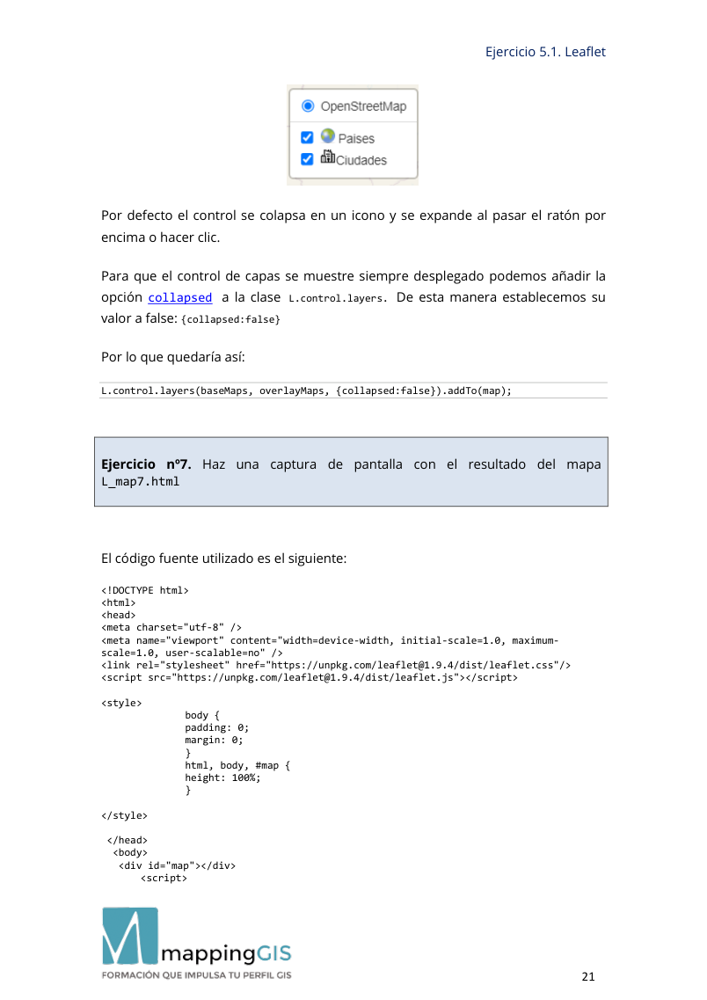
Consultar en el PDF · página 21
Leaflet · Ejercicio 8 · Título
Añade el título al mapa en el mapa L_map8.html y haz una captura de pantalla con el resultado.
Pasos y contexto originales de la clase
Página 21
Ejercicio 5.1. Leaflet
21
Por defecto el control se colapsa en un icono y se expande al pasar el ratón por
encima o hacer clic.
Para que el control de capas se muestre siempre desplegado podemos añadir la
opción collapsed a la clase L.control.layers. De esta manera establecemos su
valor a false: {collapsed:false}
Por lo que quedaría así:
L.control.layers(baseMaps, overlayMaps, {collapsed:false}).addTo(map);
Ejercicio nº 7. Haz una captura de pantalla con el resultado del mapa
L_map7.html
El código fuente utilizado es el siguiente:
<!DOCTYPE html>
<html>
<head>
<meta charset="utf-8" />
<meta name="viewport" content="width=device-width, initial-scale=1.0, maximum-
scale=1.0, user-scalable=no" />
<link rel="stylesheet" href="https://unpkg.com/leaflet@1.9.4/dist/leaflet.css"/>
<script src="https://unpkg.com/leaflet@1.9.4/dist/leaflet.js"></script>
<style>
body {
padding: 0;
margin: 0;
}
html, body, #map {
height: 100%;
}
</style>
</head>
<body>
<div id="map"></div>
<script>
Página 22
Ejercicio 5.1. Leaflet
22
var osm =
L.tileLayer('https://{s}.tile.openstreetmap.org/{z}/{x}/{y}.png', {
attribution: '© <a
href="http://osm.org/copyright">OpenStreetMap</a> contributors',
maxZoom: 18
});
var paises = L.tileLayer.wms("http://localhost:8080/geoserver/wms", {
layers: 'countries',
format: 'image/png',
transparent: true,
attribution: "NaturalEarth"
});
var ciudades = L.tileLayer.wms("http://localhost:8080/geoserver/wms", {
layers: 'cities',
format: 'image/png',
transparent: true,
attribution: "NaturalEarth"
});
//Añadimos los dos objetos
var baseMaps = {
"OpenStreetMap": osm
};
var overlayMaps = {
"<img
src='https://upload.wikimedia.org/wikipedia/commons/thumb/e/e4/Google_Earth_icon
.svg/240px-Google_Earth_icon.svg.png' height=15px, width=15px /> Paises":
paises,
"<img src='https://img.icons8.com/small/16/000000/city.png'/>Ciudades":
ciudades
};
//Creamos el mapa
var map = L.map('map', {
center: new L.LatLng(41.66, -4.72),
zoom: 4,
//Añadimos las capas al mapa
layers: [osm, paises, ciudades]
});
//creamos el control de capas y lo añadimos al mapa
L.control.layers(baseMaps, overlayMaps, {collapsed:false}).addTo(map);
</script>
</body>
</html>
Control de títulos y subtítulos
Haz una copia del archivo L_map2.html y renómbralo como L_map8.html. Añade
este código al final:
// Insertando un título en el mapa
var title = L.control();
Página 23
Ejercicio 5.1. Leaflet
23
title.onAdd = function (map) {
var div = L.DomUtil.create('div', 'info');
div.innerHTML +=
'<h2>Ciudades del mundo</h2>Tamaño según población';
return div;
};
title.addTo(map);
Mediante este código, hemos creado un nuevo control denominado title, es
necesario utilizar una función que cree un bloque div.
Este bloque div contiene un código HTML en el que incluimos el texto que irá como
título h2 y como párrafo.
Por último, vamos al apartado del estilo para modificar el estilo de nuestro título
mediante CSS:
<style>
#map {
width: 100%;
height: 600px;
box-shadow: 5px 5px 5px #888;
}
.info {
padding: 6px 8px;
font: 14px/16px Arial, Helvetica, sans-serif;
background: white;
background: rgba(255,255,255,0.8);
box-shadow: 0 0 15px rgba(0,0,0,0.2);
border-radius: 5px;
}
.info h2 {
margin: 0 0 5px;
color: #777;
}
</style>
Ejercicio nº8. Añade el título al mapa en el mapa L_map8.html y haz una captura
de pantalla con el resultado.
Ver página 23 del PDF original, con sus capturas
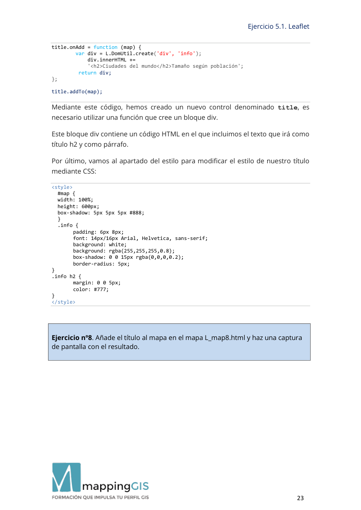
Consultar en el PDF · página 23
Leaflet · Ejercicio 9 · Leyenda
Añade la leyenda de la capa cities con el estilo cities_filter en el mapa L_map9.html y haz una captura de pantalla con el resultado.
Pasos y contexto originales de la clase
Página 23
Ejercicio 5.1. Leaflet
23
title.onAdd = function (map) {
var div = L.DomUtil.create('div', 'info');
div.innerHTML +=
'<h2>Ciudades del mundo</h2>Tamaño según población';
return div;
};
title.addTo(map);
Mediante este código, hemos creado un nuevo control denominado title, es
necesario utilizar una función que cree un bloque div.
Este bloque div contiene un código HTML en el que incluimos el texto que irá como
título h2 y como párrafo.
Por último, vamos al apartado del estilo para modificar el estilo de nuestro título
mediante CSS:
<style>
#map {
width: 100%;
height: 600px;
box-shadow: 5px 5px 5px #888;
}
.info {
padding: 6px 8px;
font: 14px/16px Arial, Helvetica, sans-serif;
background: white;
background: rgba(255,255,255,0.8);
box-shadow: 0 0 15px rgba(0,0,0,0.2);
border-radius: 5px;
}
.info h2 {
margin: 0 0 5px;
color: #777;
}
</style>
Ejercicio nº8. Añade el título al mapa en el mapa L_map8.html y haz una captura
de pantalla con el resultado.
Página 24
Ejercicio 5.1. Leaflet
24
Control de leyenda. Añadiendo una bonita leyenda al mapa
Haz una copia del archivo L_map2.html y renómbralo como L_map9.html. Añade el
siguiente código (si te fijas el código es muy similar al anterior):
// Insertando una leyenda en el mapa
var legend = L.control({position: 'bottomright'});
legend.onAdd = function (map) {
var div = L.DomUtil.create('div', 'info legend');
div.innerHTML +=
'<img src=" leyenda.png " alt="legend" width="101" height="60">';
return div;
};
legend.addTo(map);
Ojo! El archivo leyenda.png no está incluido en los datos del curso, por lo que no
aparecerá en el mapa.
En lugar de apuntar a un archivo PNG estático, podemos utilizar la respuesta del
servicio WMS de GeoServer GetLegendGraphic, que dev uelve la leyenda de una
capa (o grupo de capas) como un archivo PNG.
Por ejemplo, si introduces esta url en el navegador:
http://localhost:8080/geoserver/wms?REQUEST=GetLegendGraphic&VERSION=1.0.0&FORMAT=ima
ge/png&WIDTH=20&HEIGHT=20&LAYER=earth:cities
Aparecerá la leyenda que creamos en GeoServer con el complemento de estilos
CSS:
La petición GetLegendGraphic utiliza el estilo asignado por defecto a la capa, si te
aparece otra leyenda al visualizar la anterior url, tienes dos opciones:
a) Ir a GeoServer y asignar el estilo cities_filter a la capa cities.
b) Utilizar esta otra url:
http://localhost:8080/geoserver/wms?REQUEST=GetLegendGraphic&VERSION=1.0.0&FOR
MAT=image/png&WIDTH=20&HEIGHT=20&LAYER=earth:cities&Style=cities_filter
Página 25
Ejercicio 5.1. Leaflet
25
El código final quedaría así:
// Insertando una leyenda en el mapa
var legend = L.control({position: 'bottomright'});
legend.onAdd = function (map) {
var div = L.DomUtil.create('div', 'info legend');
div.innerHTML +=
'<img src="
http://localhost:8080/geoserver/wms?REQUEST=GetLegendGraphic&VERSION=1.0.0&FORMAT=ima
ge/png&WIDTH=20&HEIGHT=20&LAYER=earth:cities" alt="legend" width="101" height="60">';
return div;
};
legend.addTo(map);
Por último, si se desea , se puede modificar el estilo de nuestra leyenda mediante
CSS, para aplicar una transparencia a la leyenda:
.legend {
opacity: 0.7;
}
Para mostrar varias capas WMS en la leyenda es necesario crear un grupo:
http://localhost:8080/geoserver/wms?REQUEST=GetLegendGraphic&VERSION=1.0.0&FORMAT=ima
ge/png&WIDTH=20&HEIGHT=20&LAYER=worldgroup
Ejercicio nº 9. Añade la leyenda de la capa cities con el estilo cities_filter en el
mapa L_map9.html y haz una captura de pantalla con el resultado.
Ver página 25 del PDF original, con sus capturas
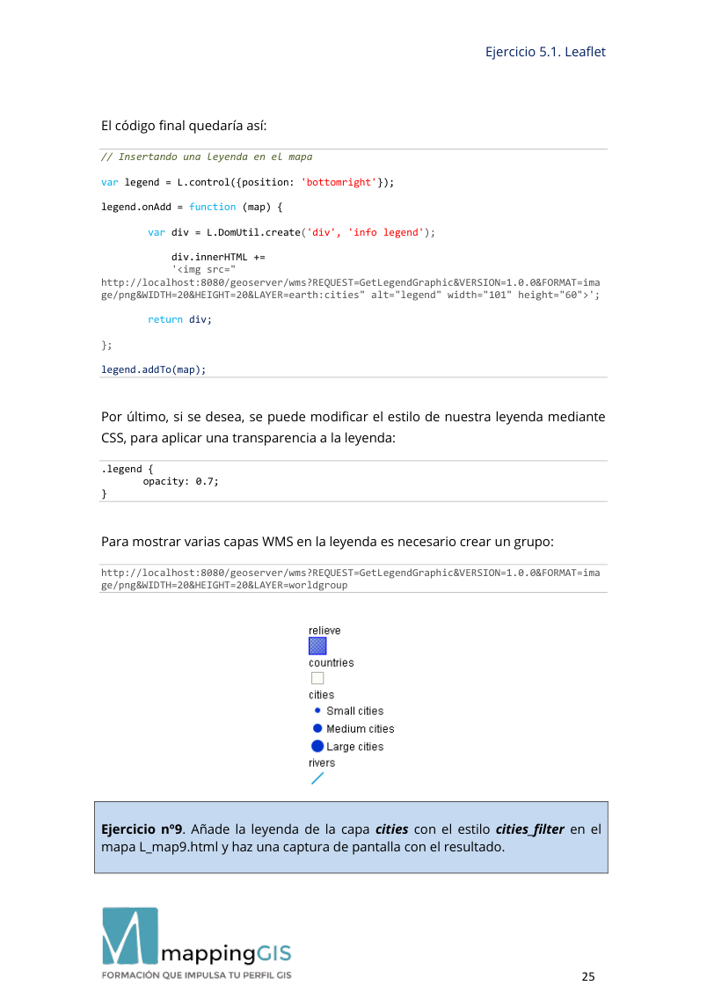
Consultar en el PDF · página 25
Leaflet · Ejercicio 10 · GeoJSON
Haz una captura de pantalla con el resultado del mapa L_map10.html
Pasos y contexto originales de la clase
Página 25
Ejercicio 5.1. Leaflet
25
El código final quedaría así:
// Insertando una leyenda en el mapa
var legend = L.control({position: 'bottomright'});
legend.onAdd = function (map) {
var div = L.DomUtil.create('div', 'info legend');
div.innerHTML +=
'<img src="
http://localhost:8080/geoserver/wms?REQUEST=GetLegendGraphic&VERSION=1.0.0&FORMAT=ima
ge/png&WIDTH=20&HEIGHT=20&LAYER=earth:cities" alt="legend" width="101" height="60">';
return div;
};
legend.addTo(map);
Por último, si se desea , se puede modificar el estilo de nuestra leyenda mediante
CSS, para aplicar una transparencia a la leyenda:
.legend {
opacity: 0.7;
}
Para mostrar varias capas WMS en la leyenda es necesario crear un grupo:
http://localhost:8080/geoserver/wms?REQUEST=GetLegendGraphic&VERSION=1.0.0&FORMAT=ima
ge/png&WIDTH=20&HEIGHT=20&LAYER=worldgroup
Ejercicio nº 9. Añade la leyenda de la capa cities con el estilo cities_filter en el
mapa L_map9.html y haz una captura de pantalla con el resultado.
Página 26
Ejercicio 5.1. Leaflet
26
Capas vectoriales. El formato GeoJSON
GeoJSON se está convirtiendo en un formato de datos muy popular entre muchas
tecnologías y servicios GIS. ¿Por qué? es simple, ligero, sencillo, y Leaflet es
bastante bueno en su manejo.
Leaflet soporta todos los tipos geométricos de geoJSON. Pero los tipos “Feature” y
“FeatureCollection” son l os más adecuado s para trabajar , ya que nos permiten
describir los elementos con un conjunto de propiedades. Incluso podemos utilizar
estas propiedades para dar estilo a nuestros vectores de Leaflet . He aquí un
ejemplo de un feature GeoJSON simple:
var geojsonFeature = {
"type": "Feature",
"properties": {
"name": "Reino de León",
"amenity": "Campo de fútbol de la Cultural y Deportiva Leonesa",
"popupContent": "Aquí es donde juega el equipo de fútbol de León"
},
"geometry": {
"type": "Point",
"coordinates": [-4.99, 39.75621]
}
};
Página 27
Ejercicio 5.1. Leaflet
27
Trabajando con archivos GeoJSON en Leaflet
En este ejercicio crearemos un mapa de cloropletas interactivo de los países del
mundo.
Haz una copia del archivo L_map1.html y renómbralo como L_map10.html
Modifica el código y pon al comienzo el objeto map, sin la opción layers.
Cambia la escala de visualización a 4.
var map = L.map('map', {
center: [41.66, -4.72],
zoom: 4
});
Visualizaremos el mapa con tiles de MapBox que tiene una bonita escala de grises
y se ajusta rá bien con nuestra capa de países. Sustituye el código que mostraba
los tiles de OSM, por este otro:
L.tileLayer('https://api.mapbox.com/styles/v1/{id}/tiles/{z}/{x}/{y}?access_token=pk.
eyJ1IjoibmFkaXJpbmciLCJhIjoiY2tob2phbXVoMDE4cjJ6cnN6Nmh5eWRpeSJ9.-9CD1Qdet6QZ0-la9X-
WxA', {
attribution: '© <a href="https://www.mapbox.com/feedback/">Mapbox</a> © <a
href="http://www.openstreetmap.org/copyright">OpenStreetMap</a>',
maxZoom: 18,
id: 'mapbox/streets-v11',
tileSize: 512,
zoomOffset: -1,
}).addTo(map);
Para que el código anterior funcione sin problemas hay que tener la precaución de
comprobar que no hay saltos de línea incorrectos. La primera línea termina en {, y
el resto terminan en una coma salvo la última que termina en ;
Además, como has observado Mapbox requiere de una clave, debes comprobar
que está perfectamente escrita, incluyendo los guiones que contiene, en caso
contrario no funcionará:
access_token=
TU_TOKEN_MAPBOX'
Página 28
Ejercicio 5.1. Leaflet
28
Ahora vamos a trabajar con la capa en formato geoJSON. Utilizaremos la capa de
países original en formato SHP countries.shp.
Ya hemos visto en ejercicios anteriores como convertir un shapefile a geojson .
Tenemos varias opciones:
1. Utilizar la librería open source ogr2ogr que sirve para convertir datos
vectoriales entre distintos formatos.
2. Utilizar un conversor online:
a. HTML5 Shapefile to GeoJSON Converter. Usando HTML5 y es simple:
arrastra tu shapefile y obtén un GeoJSON.
b. MyGeodata Converter, que acepta hasta 20 formatos de entrada y 8
de salida (ESRI Shapefile, Microstation DGN, MapInfo File, CSV, GML,
GPX, KML y GeoJSON).
3. Utilizar un cliente SIG como QGIS. Desde QGIS añadimos el SHP y a
continuación guardaremos la capa en formato GeoJSON. (Capa > Guardar
como…).
Página 29
Ejercicio 5.1. Leaflet
29
Guarda el nuevo archivo generado en el mism o directorio que las páginas HTML
que estamos creando.
Cambia la extensión d el archivo a " countries.js". Es importan te cambiar la
extensión de .geojson a .js para que funcione.
Ahora que hemos convertido el shapefile a JavaScript necesitamos asegurarnos de
que Leaflet lo importará y reconocerá nuestros datos.
Con un editor de texto, como el Notepad++, abr imos el archivo countries.js y
agregamos el texto
var countries =
Justo antes del código ya existente del archivo, de tal forma que el contenido del
archivo countries.js sea:
Página 30
Ejercicio 5.1. Leaflet
30
var countries = {"type":"FeatureCollection", ... } // resto del archivo geojson
Haciendo esto, estamos estableciendo que el contenido completo del archivo
GeoJSON sea igual a la variable countries.
Una vez que hemos vinculado el archivo en el encabezado del documento del
mismo modo que cualquier otro archivo JavaScript, ahora seremos capaces de
manipular el archivo a través del objeto countries.
Lo llevaremos a nuestro documento , incorporando la siguiente sentencia a la
cabecera:
<script type="text/javascript" src="countries.js"></script>
Los objetos GeoJSON se añaden al mapa a través de una capa de GeoJSON. Para
crearla y añadirla un mapa, podemos usar el siguiente código:
L.geoJson(countries).addTo(map);
Página 31
Ejercicio 5.1. Leaflet
31
Un poco de color
Vamos a dar estilo a nuestra capa asignando los estilos en una variable:
var countryStyle = {
'color': "#e12a2a",
'weight': 2,
'opacity': 0.6
};
Como hemos visto en la presentación teórica, una capa vectorial de polígonos
hereda las opciones de la clase Path.
Las opciones de esta clase son:
stroke, color, weight, opacity, fill, fillcolor, fillOpacity, dashArray, lineCap,
lineJoin, clickable, pointerEvents, classname
Juega con estas opciones para eliminar el color de relleno, po ner un borde de
tramas…
E incluimos el estilo nuevo a la capa GeoJSON:
L.geoJson(countries, {
style: countryStyle
}).addTo(map);
Página 32
Ejercicio 5.1. Leaflet
32
Ahora vamos a dar color a los países de acuerdo a su población. La elección de
colores agradables para un mapa puede ser una labor un poco complicada, pero
hay una herramienta que puede ayudar, se trata de ColorBrewer.
Utilizando los valores que recibimos de él, creamos una función que nos devuelve
un color en función de la población:
function getColor(d) {
return d > 100000000 ? '#800026' :
d > 50000000 ? '#BD0026' :
d > 20000000 ? '#E31A1C' :
d > 10000000 ? '#FC4E2A' :
d > 5000000 ? '#FD8D3C' :
d > 2000000 ? '#FEB24C' :
d > 1000000 ? '#FED976' :
'#FFEDA0';
};
A continuación, definimos otra función para nuestra capa GeoJSON de manera que
fillColor (el relleno de los polígonos) dependerá de la propiedad
feature.properties.pop_est. Es decir, el campo población de nuestra capa de países.
Página 33
Ejercicio 5.1. Leaflet
33
También ajustar emos la apariencia y añadimos un borde blanco con puntos
discontinuos.
function style(feature) {
return {
fillColor: getColor(feature.properties.pop_est),
weight: 2,
opacity: 1,
color: 'white',
dashArray: '3',
fillOpacity: 0.7
};
}
Cambia el estilo para que se refleje el nuevo estilo:
L.geoJson(countries, {
style: style
}).addTo(map);
Este sería el resultado:
Página 34
Ejercicio 5.1. Leaflet
34
Interactuando con el mapa
Ahora vamos a añadir una funcionalidad definiendo una función que entre en las
propiedades de los datos de nuestro geojson. El siguiente código usa la
funcionalidad popup de Leaflet:
function popup(feature, layer) {
if (feature.properties && feature.properties.name) {
layer.bindPopup(feature.properties.name);
}
}
Esta función comprueba que la parte properties del GeoJSON existe, así como la
propiedad del campo name, que es único para el archivo de datos.
La función layer.bindPopup construye la funcionalidad de clic en el mapa como
hemos visto anteriormente.
onEachFeature es una propiedad de L.geoJson que se puede pasar con una función:
geojson = L.geoJson(countries, {
style: style,
onEachFeature: popup
}).addTo(map);
Página 35
Ejercicio 5.1. Leaflet
35
Ejercicio nº 10. Haz una captura de pantalla con el resultado del mapa
L_map10.html
Añadir una capa WFS de GeoServer y mostrar en una ventana
emergente sus atributos mediante AJAX
En este ejercicio crearemos un mapa interactivo de los países del mundo
utilizando la capa contries como servicio WFS
Haz una copia del archivo L_map1.html y renómbralo como L_map11.html
Modifica el código y pon al comienzo el objeto map, sin la opción layers.
Cambia la escala de visualización a 2.
var map = L.map('map', {
center: [41.66, -4.72],
zoom: 2
});
En primer lugar, añadiremos al script la librería jQuery:
<script src="https://code.jquery.com/jquery-3.5.1.js" ></script>
JQuery es una librería de JavaScript de código abierto, que simplifica la tarea de
programar en JavaScript y permite agregar interactividad a un sitio web sin tener
conocimientos del lenguaje.
Vamos a construir la URL con el servicio WFS de GeoS erver donde debemos
reanudar nuestro geoJSON.
La dirección URL servirá para crear la llamada AJAX a la página que contiene
nuestro GeoJSON:
Ver página 35 del PDF original, con sus capturas
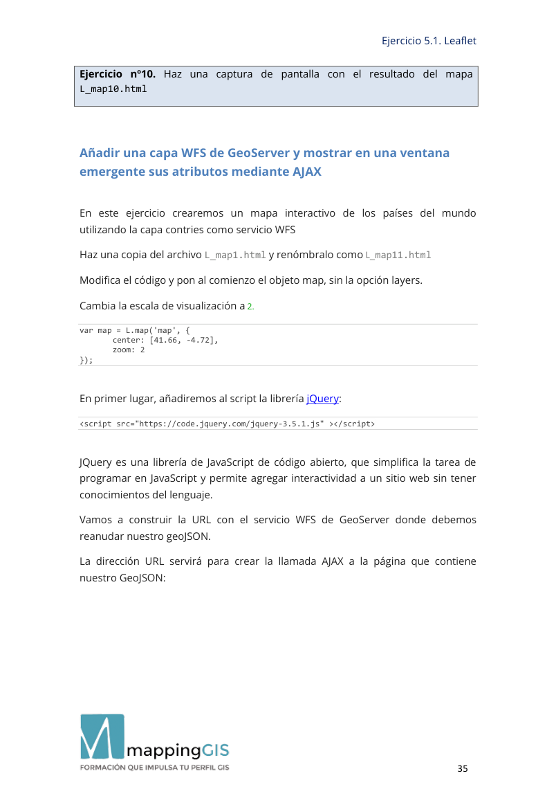
Consultar en el PDF · página 35
Leaflet · Ejercicio 11 · WFS mediante AJAX
Haz una captura de pantalla con el resultado del mapa L_map11.html
Pasos y contexto originales de la clase
Página 35
Ejercicio 5.1. Leaflet
35
Ejercicio nº 10. Haz una captura de pantalla con el resultado del mapa
L_map10.html
Añadir una capa WFS de GeoServer y mostrar en una ventana
emergente sus atributos mediante AJAX
En este ejercicio crearemos un mapa interactivo de los países del mundo
utilizando la capa contries como servicio WFS
Haz una copia del archivo L_map1.html y renómbralo como L_map11.html
Modifica el código y pon al comienzo el objeto map, sin la opción layers.
Cambia la escala de visualización a 2.
var map = L.map('map', {
center: [41.66, -4.72],
zoom: 2
});
En primer lugar, añadiremos al script la librería jQuery:
<script src="https://code.jquery.com/jquery-3.5.1.js" ></script>
JQuery es una librería de JavaScript de código abierto, que simplifica la tarea de
programar en JavaScript y permite agregar interactividad a un sitio web sin tener
conocimientos del lenguaje.
Vamos a construir la URL con el servicio WFS de GeoS erver donde debemos
reanudar nuestro geoJSON.
La dirección URL servirá para crear la llamada AJAX a la página que contiene
nuestro GeoJSON:
Página 36
Ejercicio 5.1. Leaflet
36
var owsrootUrl = 'http://localhost:8080/geoserver/ows';
var defaultParameters = {
service: 'WFS',
version: '1.0.0',
request: 'GetFeature',
typeName: 'earth:countries',
outputFormat: 'application/json'
};
var parameters = L.Util.extend(defaultParameters);
var URL = owsrootUrl + L.Util.getParamString(parameters);
La llamada AJAX se construye mediante JQuery, a través de la cual se pasa la URL y
una función de éxito, o qué efecto debe realizarse la llamada.
AJAX (JavaScript Asíncrono y XML) nos proporciona la posibilidad de hacer
peticiones al servidor (intercambiar datos) sin tener que volver a cargar la página.
En nuestro ejemplo, vamos a hacer clic sobre los objetos geográficos de la capa
countries, y mostraremos un popup que conten drá la información captada por
GeoJSON. En ese caso, veremos el nombre del país.
El método $.ajax () realiza una solicitud asíncrona AJAX:
$.ajax({
url: URL,
success: function (data) {
//creamos una nueva capa geojson
var geojson = new L.geoJson(data, {
//Aplicamos un estilo
style: {"color":"#2ECCFA","weight":2},
//vinculamos un popup mostrando el nombre del país
onEachFeature: function(feature, layer){
layer.bindPopup("Has hecho click en " + feature.properties.name);
}}
).addTo(map); }
});
Página 37
Ver página 37 del PDF original, con sus capturas
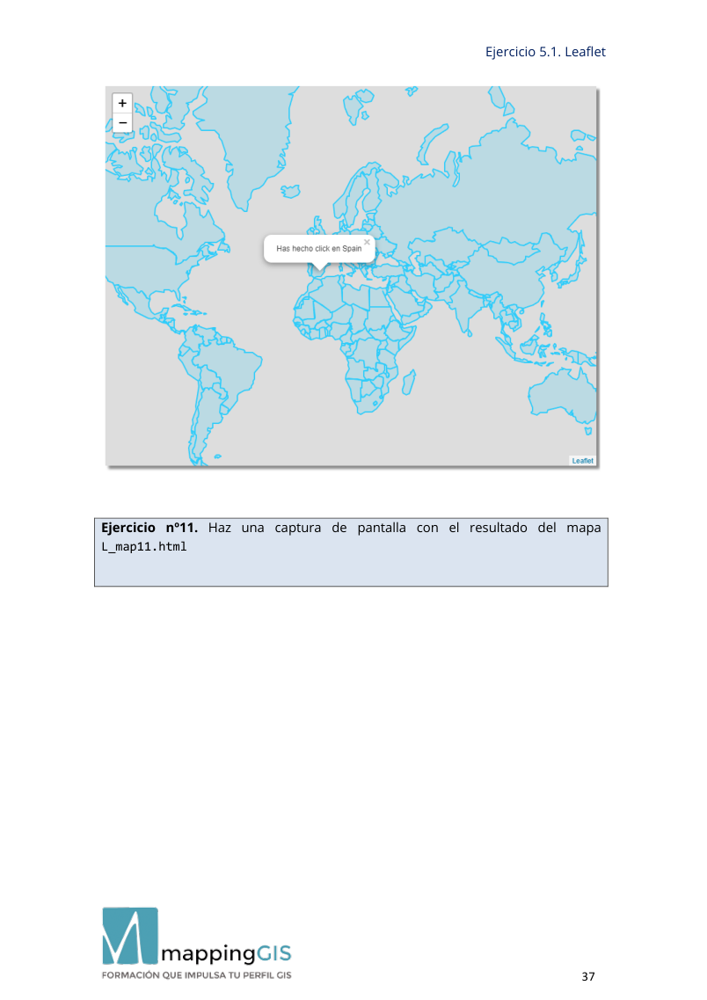
Consultar en el PDF · página 37
Leaflet · Ejercicio 12 · Plugin de búsqueda
Haz un a captura de pantalla con el resultado del mapa L_map12.html
Pasos y contexto originales de la clase
Página 37
Ejercicio 5.1. Leaflet
37
Ejercicio nº 11. Haz una captura de pantalla con el resultado del mapa
L_map11.html
Página 38
Ejercicio 5.1. Leaflet
38
Extendiendo la funcionalidad de Leaflet mediante plugins
Sin duda, una de las principales ventajas de Leaflet es el gran número de plugins
de que dispone. La librería de Leaflet es muy ligera, contiene los elementos
imprescindibles para crear el mapa. Podemos completar este cuerpo básico con
los plugins.
Insertando un control de búsqueda de atributos en una capa
estática GeoJSON
Vamos a continuar dando interactividad a nuestro visor web incorporando un
control que realice una búsqueda en un campo de los atributos de una capa en
formato GeoJSON.
Añadiremos a nuestro visor web un control que realice una búsqueda mediante
atributos dentro de los objetos geográficos vectoriales.
El control buscará en marcadores o en los objetos geográficos de un GeoJSON.
Página 39
Ejercicio 5.1. Leaflet
39
Haz una copia del archivo L_map10.html (que ya debe c ontener la capa countries
en formato GeoJSON) y renómbralo como L_map12.html
1. Ve a la página de plugins de Leaflet: http://leafletjs.com/plugins.html
2. Ve a la Sección: Overlay interaction > Search & popups y pincha sobre
Leaflet Search. Este es el plugin para añadir las capas de Google en Leaflet:
3. Hacemos clic sobre el menú Code. A continuación, nos descargamos el
plugin haciendo clic sobre el Download ZIP, que se encuentra en la parte de
abajo del menú.
4. Descomprimimos el archivo y lo colocamos en el mismo directorio en el
que se encuentre nuestro HTML.
5. Debajo del script que añade la capa countries.js, a ñadiremos la librería JS y
la hoja de estilos CSS en la cabecera del HTML:
Página 40
Ejercicio 5.1. Leaflet
40
<script src="leaflet-search-master\src\leaflet-search.js"></script>
<link rel="stylesheet" href="leaflet-search-master\src\leaflet-search.css" />
6. Creamos una variable denominada countriesJS para meter en ella la capa
de países que tenemos en formato GeoJSON:
var countriesJS = L.geoJson(countries, {
onEachFeature: popup,
style: style
}).addTo(map);
7. A continuación creamos una nueva variable, denominada searchControl, que
contendrá el control de búsqueda, que se implementa a través de la clase
L.Control.Search :
var searchControl = new L.Control.Search({
layer: countriesJS,
propertyName: 'name'
});
En el código superior vemos como las propiedades de la clase L.Control.Search son
layer y propertyName, en las que incluiremos la capa sobre la que queremos realizar
la búsqueda ( countriesJS) y el campo que contendrá el texto a buscar ( name)
respectivamente.
8. Por último, añadimos el control al mapa:
map.addControl(searchControl);
Listo. Esta es la manera más simple de añadir el control de búsqueda de atr ibutos
en una capa GeoJSON.
Haz clic en el nuevo botón con forma de lupa e introduce el nombre de un país (en
inglés):
Página 41
Ejercicio 5.1. Leaflet
41
Comprobarás que, al hacer clic sobre el res ultado de la búsqueda, en el país
aparece una circunferencia roja. Esto es útil si trabajamos con una capa de puntos,
pero en una capa de polígonos, lo interesante es resaltar el polígono con otro
color.
Esto sucede porque la opción de mostrar la localiza ción mediante una
circunferencia (circleLocation) viene por defecto como true.
Vamos a modificar el código para eliminar esta circunferencia circleLocation: false:
var searchControl = new L.Control.Search({
layer: countriesJS,
propertyName: 'name',
marker: false
});
Inmediatamente después y antes de añadir el control al mapa, crearemos una
función para definir el estilo del objeto geográfico resultado de la búsqueda:
searchControl.on('search:locationfound', function(e) {
e.layer.setStyle({fillColor: '#3f0', color: '#0f0'});
})
Realiza de nuevo la búsqueda para comprobar el resultado.
El siguiente paso es limpiar los resultados después de cada búsqueda.
Inmediatamente después crearemos una nueva función que limpie los resultados
de las búsquedas:
.on('search:collapsed', function(e) {
countriesJS.eachLayer(function(layer) { //restauramos el color del elemento
Página 42
Ejercicio 5.1. Leaflet
42
countriesJS.resetStyle(layer)
})
});
Y al final del script añadimos el control al mapa:
map.addControl(searchControl);
Listo. Al hacer clic sobre la ruleta del ratón se limpiarán los resultados.
Página 43
Ejercicio 5.1. Leaflet
43
Aquí tienes el HTML completo:
<!DOCTYPE html>
<html>
<meta charset="utf-8" />
<head>
<link rel="stylesheet" href="https://unpkg.com/leaflet@1.9.4/dist/leaflet.css"/>
<script src="https://unpkg.com/leaflet@1.9.4/dist/leaflet.js"></script>
<script type="text/javascript" src="countries.js"></script>
<script src="https://cdn.jsdelivr.net/npm/leaflet-search@4.0.0/dist/leaflet-
search.src.min.js"></script>
<link rel="stylesheet" href="https://cdn.jsdelivr.net/npm/leaflet-
search@4.0.0/dist/leaflet-search.src.min.css">
<style>
#map {
width: 100%;
height: 600px;
box-shadow: 5px 5px 5px #888;
}
</style>
</head>
<body>
<div id="map"></div>
<script>
var map = L.map('map', {
center: [41.66, -4.72],
zoom: 4
});
L.tileLayer('https://{s}.tile.openstreetmap.org/{z}/{x}/{y}.png').addTo(map);
var countryStyle = {
'color': "#858585",
'weight': 2,
'opacity': 0.6
};
function getColor(d) {
return d > 100000000 ? '#800026' :
d > 50000000 ? '#BD0026' :
d > 20000000 ? '#E31A1C' :
d > 10000000 ? '#FC4E2A' :
d > 5000000 ? '#FD8D3C' :
d > 2000000 ? '#FEB24C' :
d > 1000000 ? '#FED976' :
'#FFEDA0';
};
function style(feature) {
return {
fillColor: getColor(feature.properties.pop_est),
weight: 2,
opacity: 1,
color: 'white',
dashArray: '3',
fillOpacity: 0.7
};
}
function popup(feature, layer) {
if (feature.properties && feature.properties.name) {
Página 44
Ejercicio 5.1. Leaflet
44
layer.bindPopup(feature.properties.name);
}
}
var countriesJS = L.geoJson(countries, {
onEachFeature: popup,
style: style
}).addTo(map);
var searchControl = new L.Control.Search({
layer: countriesJS,
propertyName: 'name',
marker: false
});
searchControl.on('search:locationfound', function(e) {
e.layer.setStyle({fillColor: '#3f0', color: '#0f0'});
})
.on('search:collapsed', function(e) {
countriesJS.eachLayer(function(layer) {//restauramos el color del elemento
countriesJS.resetStyle(layer)
})
});
map.addControl(searchControl);
</script>
</body>
</html>
Como puedes observar en el código anterior, hemos sustituido la ruta a los
archivos descargados del plugin por un enlace CDN. De esta forma puedes ver un
ejemplo de las dos formas en que se puede utilizar un plugin de Leaflet:
1. Mediante la descarga de archivos.
2. Mediante un enlace CDN.
Hay varios sitios donde podemos encontrar los enlaces CDN con los plugins, en
este caso hemos utilizado el siguiente:
https://www.jsdelivr.com/package/npm/leaflet-search
Página 45
Ver página 45 del PDF original, con sus capturas
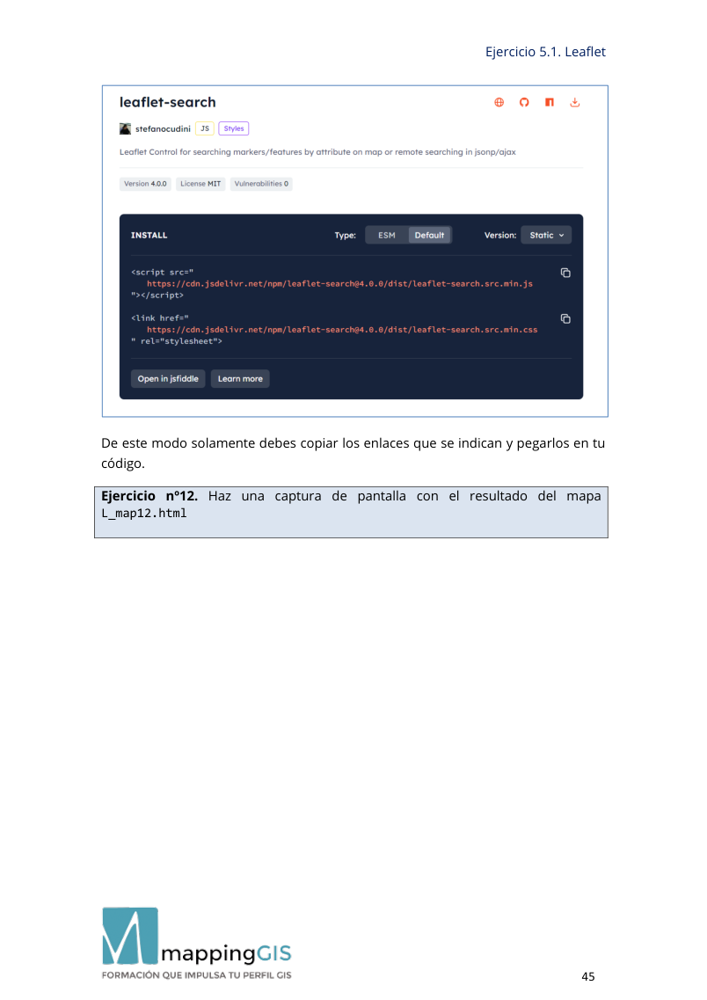